시뮬레이션 문서 · 탭 9개
물리 엔진 · 보도·도시 · 보행자 · 센서·렌더링 · 지형·바퀴 · sim-to-real · 로봇 리그 · 최근 연구 비교 · travplan 권고
travplan에 필요한 시뮬레이션은 하나가 아니라 네 층이다. 빠른 운동학 시뮬로 Planner를 학습하고 스택을 비교한다. Isaac Sim으로 LiDAR에서 TravMap까지 이어지는 인식 경로를 검증한다. 보도 전용 장면과 보행자 벤치마크로 일반화를 잰다. 실물이 생기면 시뮬 결과가 실물 순위를 맞히는지(sim-to-real 예측력)를 잰다. 지금 가장 값싼 개선은 운동학 시뮬의 빈틈을 메우는 일이다. 지금의 운동학 시뮬은 5 m 원 안을 가림 없이 다 보고, 지연·슬립·조향 지연이 없다.
각 방식은 다른 리서치 문서(인식, Planner, Controller·안전)와 같은 순서로 소개한다. 한 줄 요약으로 무엇인지 말하고, 동작 방식을 설명하고, travplan에 주는 의미로 마무리한다. 수식과 세부 수치는 그림 뒤의 "자세히" 토글에 넣었다.
층 무엇으로 무엇을 검증하나 비용
L0 운동학 시뮬 (sim/kinematic_sim.py) Planner 학습 데이터, 스택 폐루프 비교 에피소드당 수 초, CPU
L1 Isaac Sim 6.x + ROS 2 Jazzy (P1) LiDAR ─▶ elevation map ─▶ TravMap ─▶ 스택 실시간, GPU 1장
L2 보도 전용 장면·벤치마크 장면 다양성, 보행자 상호작용, 장거리 주행 GPU 12 GB 이상
(URBAN-SIM, UrbanVerse, SidewalkBench)
L3 실물과 시뮬의 짝 평가 시뮬 순위가 실물 순위를 맞히는가 (SRCC) 실물 로봇 필요
| 절 | 다루는 것 | travplan과의 관계 |
|---|---|---|
| S.1 물리 엔진 | Isaac Sim·Isaac Lab, Newton, MuJoCo, Genesis, Gazebo, Chrono, CARLA | L1 엔진 선택. 결론은 Isaac Sim 유지 |
| S.2 보도·도시 시뮬레이터 | MetaUrban, URBAN-SIM, UrbanVerse, Vid2Sim, SidewalkBench, CostNav | L2 장면과 평가 틀. TP-0027(평가 확장)의 근거 |
| S.3 보행자 시뮬레이션 | Social Force, ORCA, 사건 기반 스크립트, 데이터 기반 생성 | 동적 장애물 평가 시나리오 |
| S.4 센서·렌더링 | RTX LiDAR, 3DGS real-to-sim, world model | L1 LiDAR 경로, 카메라 모듈 검증 |
| S.5 지형·바퀴 | 지형 생성, 바퀴 물리의 한계, 스워브 모듈 모델, 변형 지면 | L0 보강, 스워브 모델 |
| S.6 sim-to-real | 도메인 랜덤화, 보정, 예측력(SRCC), 시뮬레이터 허점 | 벤치마크를 믿을 수 있는가 |
| S.9 로봇 리그 | antbot_gazebo, CMU 탐사 개발 환경, dddmr, Clearpath, TurtleBot4 | 오늘 띄워 토픽을 받을 수 있는 것. 인식 모듈 개발 대상 선택 |
| S.10 최근 연구 비교 | 2025–2026 연구 16편의 비교표, 공통점, 차이점 | 다음 시도 순서와 TP 후보 |
| S.7 travplan 권고 | 우선순위와 TODO 후보 | 다음 작업 |
| 절 | 다루는 것 | travplan과의 관계 |
|---|---|---|
| S.8 참고문헌 | 전체 목록(참고문헌 문서의 "시뮬레이션" 탭) |
핵심 결론 다섯 가지.
S.1 범용 물리 시뮬레이터
S.1.1 Isaac Sim 6.x와 Isaac Lab
S.1.2 Newton
S.1.3 MuJoCo, MuJoCo Warp, MuJoCo Playground
S.1.4 Genesis
S.1.5 Gazebo
S.1.6 Project Chrono
S.1.7 CARLA와 기타
travplan은 Isaac Sim을 유지한다. 보도 시뮬레이터가 모두 Isaac Sim 위에 쌓였다. ROS 2 Jazzy 브릿지와 RTX LiDAR도 P1 구조
(docs/prd.md R-F-001)에 이미 들어 있다. 다른 엔진은 변형 지면이나 대규모 강화학습 처리량처럼 특정 목적이 생길 때 쓴다.
Isaac Sim과 Isaac Lab — USD 장면 위의 GPU 물리·렌더링과 학습 프레임워크(Isaac Sim, Isaac Lab arXiv:2511.04831, NVIDIA). Isaac Sim은 OpenUSD 장면을 PhysX로 굴리고 RTX로 그리는 시뮬레이터다. Isaac Lab은 그 위에서 수천 개 환경을 병렬로 돌려 강화학습과 모방학습을 하는 프레임워크로, Isaac Gym의 후속이다. 버전은 Isaac Sim 6.0(2026-06-04), 6.1(2026-09-10)이 나왔고 7.0 alpha(2026-09-18)가 공개됐다. Isaac Lab 3.0 Early Access(2026-09-16)는 Isaac Sim 6.1 기준이고 정식판은 2026-10 말이 목표다. Isaac Sim 저장소의 소스는 Apache-2.0이고, Isaac Lab 저장소는 BSD-3-Clause다(Mimic 확장만 Apache-2.0). 다만 빌드와 실행에 필요한 Omniverse Kit SDK와 3D 에셋은 NVIDIA 별도 라이선스를 따른다.
Isaac Lab 3.0의 핵심 변화는 백엔드를 설정 한 줄로 고르는 구조다. 같은 태스크를 physics=newton_mjwarp(Newton의 MuJoCo Warp),
physics=ovphysx(PhysX 단독), physics=isaacsim_physx(Isaac Sim 전체)로 돌린다. 앞의 둘은 Isaac Sim을 띄우지 않는 kit-less
실행이다. ROS 2 브릿지와 RTX 센서가 필요하면 세 번째를 쓴다.
travplan에 주는 의미. P1(TP-0005)은 ROS 2 브릿지가 필요하므로 Isaac Sim 6.0을 그대로 쓴다. 로컬 Isaac Lab 2.3.2는 Isaac Sim 4.5에 묶여 있어, 학습 루프(Planner D DAgger 등)를 Isaac으로 옮길 때는 Isaac Lab 3.0 정식판의 kit-less 경로가 맞다. Isaac Lab의 Warp RayCaster는 높이 스캔을 수천 환경에서 싸게 만든다. 이것은 L0의 "가림 없는 시야"를 고칠 때 참고할 구현이다(S.4.1).
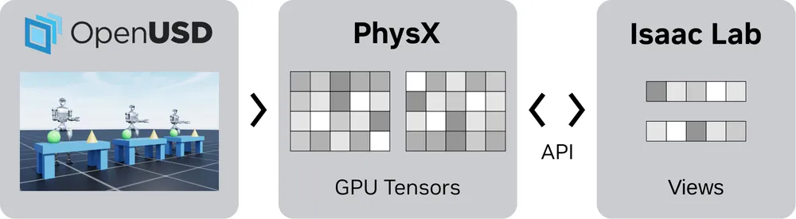
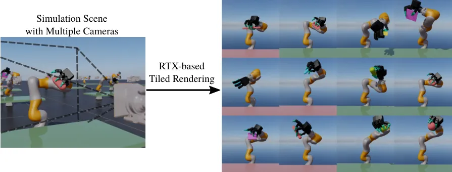
센서 세 종류. 물리 기반 센서(IMU, 접촉, 좌표 변환)는 시뮬 상태에서 바로 읽는다. 렌더링 기반 센서는 RTX 카메라다. Warp 기반 센서는 NVIDIA Warp로 메시에 광선을 쏘는 RayCaster로, LiDAR·높이 스캔·깊이 카메라를 흉내 낸다. 센서마다 갱신 주기를 따로 정할 수 있어, "센서와 제어가 같은 주기로 동기화된다"는 비현실적 가정을 피한다.
카메라 처리량. RTX Pro 6000 한 장에서 USD 카메라는 48대를 넘기면 메모리가 부족했다. 타일 카메라와 RayCaster 카메라는 수천 환경까지 늘었다. 사진 같은 영상이 필요 없으면 RayCaster가 압도적으로 싸다.
액추에이터. implicit 액추에이터는 PhysX 안의 관절 PD로 푼다. explicit 액추에이터는 토크를 파이썬에서 계산해 넣는다. DC 모터 모델은 속도가 오를수록 낼 수 있는 토크가 줄어드는 포화를 흉내 낸다.
$$ \tau_{\text{PD}} = k_p (q^* - q) + k_d (\dot q^* - \dot q) + \tau_{\text{ff}}, \qquad \tau_{\max}(\dot q) = \tau_{\text{sat}} \Big(1 - \frac{\dot q}{\dot q_{\max}}\Big), \qquad \tau = \operatorname{clip}\big(\tau_{\text{PD}},\ -\tau_{\max},\ \tau_{\max}\big) $$
관절 마찰은 Coulomb 모델과 stiction(정지 마찰 임계 + 동마찰 + 점성) 모델을 고른다. 모터 관성은 armature 값으로 넣는다.
도메인 랜덤화. 물리 파라미터(마찰, armature, 질량, 중력)와 렌더링 파라미터(텍스처, 조명)를 무작위화한다. PhysX 설계상 질량·마찰 같은 파라미터는 CPU API로만 바꿀 수 있고, 메시 크기처럼 시작 전에만 바꿀 수 있는 것도 있다.
travplan에 주는 것. 스워브 모듈의 조향 모터는 속도가 오를수록 토크가 줄고 조향 속도에 한계가 있다. L0에서 조향 속도 한계를 넣을 때 위 DC 모터 포화식이 출발점이다(S.5.3).
Newton — Linux Foundation이 관리하는 오픈소스 GPU 물리 엔진(GitHub, Disney Research·Google
DeepMind·NVIDIA 공동 시작). NVIDIA Warp 위에 지었고 MuJoCo Warp를 주 백엔드로 통합했다. Kamino 강체 솔버, VBD(vertex block descent) 변형체,
MPM 입자(모래·눈·유체), SDF와 hydroelastic 접촉을 함께 담는다. 미분 가능한 시뮬을 지원한다. 2025-09 beta, 2026-03 1.0을 거쳐 2026-09 기준
v1.6.0이고 Apache-2.0이다. Isaac Lab 3.0은 physics=newton_mjwarp로 Newton을 바로 쓴다.
travplan에 주는 의미. 예제에 높이 지형, omni-wheel, MPM 알갱이 위를 걷는 ANYmal이 있다. Isaac Lab 안에서 자갈·모래·눈 같은 변형 지면을 GPU 병렬로 시험할 수 있는 거의 유일한 경로다. 보도는 대부분 단단한 포장면이라 지금은 필요 없다.
미분 가능성의 범위를 구분해야 한다. Newton은 미분 가능한 솔버를 갖지만 주 백엔드인 MuJoCo Warp는 미분되지 않는다(S.1.3). MuJoCo의 접촉 모델을 쓰면서 동시에 시뮬을 역전파할 수는 없다. 접촉 정확도와 기울기 중 하나를 골라야 한다. 동역학 모델을 데이터로 배우는 데는 기울기가 필요 없으므로(블랙박스 plant면 충분하다) 이 갈림길은 파라미터를 역전파로 맞추려 할 때만 생긴다(S.5.3).
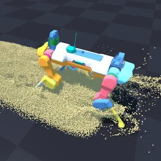
MuJoCo 계열 — 접촉이 정확한 연구용 엔진과 그 GPU판(MuJoCo,
MuJoCo Warp, Playground arXiv:2502.08844, Google
DeepMind). MuJoCo 3.14(2026-09-22)와 같은 버전의 MuJoCo Warp가 GPU 병렬판이다. MuJoCo Playground는 JAX판(MJX) 위의 학습 프레임워크로,
pip install playground 하나로 설치해 GPU 한 장에서 몇 분 만에 정책을 학습한다. 4족, 휴머노이드, 손, 팔에서
zero-shot sim-to-real을 보였다. 영상 입력의 zero-shot 이전은 조작 과제(Franka 큐브 집기)에서만 보였다. 모두 Apache-2.0이다.
travplan에 주는 의미. 보행과 조작에는 강하지만 보도 에셋과 ROS 2 브릿지가 없다. Isaac Lab 3.0이 Newton을 통해 MuJoCo Warp를 품으므로 따로 고를 이유가 없다. 다만 바퀴 접촉을 물리로 풀어야 하는 작업에서는 이야기가 다르다(S.5.2, S.5.3).
MuJoCo Warp는 미분되지 않는다. Warp의 자동 미분을 쓰지 않는다고 문서가 명시한다. 기울기가 필요하면 JAX판 MJX로 가야 하고, MJX는 복잡한 장면에서 MuJoCo Warp보다 느리다. GPU 위에서는 원자적 연산 때문에 결정론도 보장되지 않는다 — 같은 입력이 실행마다 미세하게 다른 결과를 낼 수 있다. 회귀 테스트를 짤 때 알고 있어야 한다.
Genesis — 속도 주장으로 화제가 된 범용 시뮬레이터(GitHub genesis-world, Apache-2.0, 2026-09 기준 v1.4.2). 공개 당시 RTX 4090에서 "초당 4,300만 프레임"을 내세웠다. 그런데 이 수치는 Franka 팔 하나가 거의 움직이지 않는 장면에서 잰 값이었다. 외부 연구자가 행동을 실제로 주는 조건으로 다시 재자 다른 GPU 시뮬보다 3–10배 느렸다(GitHub issue #181). Genesis 팀은 이후 자기 충돌을 켜고 4,300만, 무작위 행동을 넣고 2,700만 프레임을 보고했다.
travplan에 주는 의미. 시뮬레이터 속도는 자기 작업으로 재야 한다. 공개 벤치마크는 장면 구성에 따라 두 자릿수 배까지 달라진다. travplan은 Genesis를 고르지 않는다.
GPUSimBench는 GPU 시뮬레이터 일곱 개의 처리량, 실물과의 일치, 결정론을 한 장비에서 비교한 벤치마크다(arXiv:2607.13059, IROS 2026, Shanghai AI Lab·MIRAI·NTU·Nanjing Univ.). 대상은 Isaac Lab, ManiSkill, Madrona, Genesis, MuJoCo Warp, MJX, MuJoCo Playground다. 처리량 1위이고 결정론적인 Genesis가 실물 일치에서는 다섯째로, Isaac Lab 바로 앞이었다. 빠르고 재현되는 엔진이 실물에 가깝다는 보장은 없다.
동작 방식. 장면은 셋이다. 정육면체 27개를 떨어뜨리는 장면과 Franka 팔에 무작위 관절 목표를 주는 장면으로 처리량과 메모리를 잰다. 20° 경사로 굴린 쇠공이 정육면체 더미를 치는 장면은 실물 장치에서 16번 재현하고, 정육면체의 최종 평면 위치 분포를 EMD(earth mover's distance)로 실물과 비교한다. 같은 실행 안 병렬 환경끼리의 차이(병렬 변동)와 실행 사이의 차이(재실행 변동)도 따로 잰다. 장비는 RTX 5070(12 GB) 한 장이다. Franka 장면의 최대 처리량은 Genesis가 1.11×10⁷ FPS로 가장 높았고 Isaac Lab은 1.85×10⁶, MuJoCo Warp는 3.54×10⁶이었다. 실물과의 EMD는 ManiSkill이 2.52 cm로 가장 작았다. Genesis는 4.78 cm, Isaac Lab은 5.40 cm였다. 병렬 변동과 재실행 변동이 둘 다 0인 엔진은 Genesis와 MJX다. Isaac Lab과 ManiSkill은 재실행 변동이 0이고 병렬 변동만 있다. 둘 다 0이 아닌 엔진은 MuJoCo Warp와 Madrona다. 저자들은 병렬 변동을 GPU 부동소수 합산 순서로, 재실행 변동을 접촉 솔버의 경로 차이로 설명한다.
travplan에 주는 의미. travplan의 1층 스모크 게이트는 "같은 설정이면 12 에피소드가 전부 같다"는 재현성 위에 서 있다(CLAUDE.md, TP-0156). Isaac Lab은 재실행 변동이 0이었지만 병렬 환경끼리는 달랐다. 그래서 병렬 환경 여러 개를 "같은 에피소드의 반복"으로 세면 잡음이 섞인다. Isaac Sim과 ROS 2를 잇는 폐루프(TP-0005)의 비결정성은 주로 비동기 토픽 타이밍에서 오는데, 이것은 이 논문이 재지 않았다. 그래서 TP-0005에서는 게이트를 쓰기 전에 같은 설정 재실행으로 잡음 바닥부터 재야 한다. 또 이 비교는 조작 장면만 쓰고 바퀴 접촉을 재지 않았고, Isaac Lab 2.2.1 기준이다. 엔진 선택의 근거로는 약하다(S.1.4의 교훈과 같다).
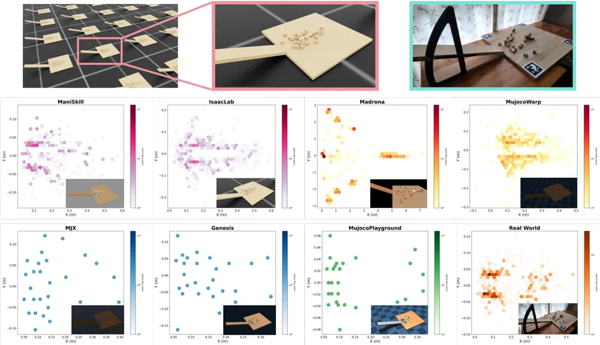
Gazebo — ROS 생태계의 표준 CPU 시뮬레이터(gz-sim, Apache-2.0). ROS 2 Jazzy의 권장 짝은 Gazebo Harmonic(LTS, 2023-09부터 2029-05까지 지원)이다. 최신 LTS는 Jetty(2025-09부터 2031-05까지)로 ROS 2 Rolling과 짝을 이룬다. 보행자 시뮬레이터(HuNavSim, Arena)도 Gazebo 래퍼를 제공한다. 병렬 환경 학습은 지원하지 않는다.
travplan에 주는 의미. GPU 없이 ROS 2 노드 연결만 확인하는 가벼운 통합 시험(예: CI)에 쓸 수 있다. 학습과 RTX LiDAR 검증은 Isaac Sim이
맡는다. 3D 내비 스택 dddmr_navigation이 Humble Docker로 Gazebo 리그를 함께 준다(Go2, 네 바퀴 조향 Zinger, Ackermann Saye).
Isaac Sim과 ROS 2 Jazzy가 없는 장비에서 폐루프 배관을 시험할 선택지다(Planner 문서 B.12.4).
Chrono — 차량과 변형 지면을 다루는 오픈소스 다물체 엔진(GitHub, BSD-3, 2026-04 v10.0.0, UW-Madison). Chrono::Vehicle은 단단한 지형부터 변형 토양(SCM), 입자(DEM), 유한요소, SPH 연속체까지 지형 모델을 고르게 한다. 같은 연구실의 ART/ATK는 1/6 축척 차량과 그 디지털 트윈으로 sim-to-real 격차를 연구하는 플랫폼이다(S.6.4). 지형 모델의 수식은 S.5.4에 있다.
travplan에 주는 의미. 잔디·자갈·눈처럼 바퀴가 빠지는 지면이 요구 사항이 되면 가장 검증된 선택이다. 지금은 필요 없다.
CARLA(GitHub, MIT)는 자동차 시뮬레이터다. 0.10.0(2024-12)부터 Unreal Engine 5를 쓰고, 보도를 걷는 보행자(walker)와 NuRec 3DGS 장면(S.4.2)을 지원한다. 보도 로봇의 몸체와 지형 비용을 다루는 기능은 없다. Webots(Apache-2.0)는 교육·연구용 CPU 시뮬레이터다. 둘 다 travplan에서 쓸 곳이 없다.
| 엔진 | 물리 | GPU 병렬 학습 | 렌더링·센서 | ROS 2 | 라이선스 | travplan 역할 |
|---|---|---|---|---|---|---|
| Isaac Sim 6.x + Isaac Lab | PhysX, Newton(3.0) | ✅ 수천 환경 | RTX 카메라·LiDAR, Warp RayCaster, 3DGS | ✅ 브릿지 | 소스 Apache-2.0 + NVIDIA 구성요소 | L1 주 엔진 |
| Newton | MuJoCo Warp, Kamino, VBD, MPM | ✅ | 기본 뷰어·타일 카메라 | ❌ | Apache-2.0 | 변형 지면이 필요할 때(Isaac Lab 백엔드) |
| MuJoCo·Playground | MuJoCo(MJX, Warp) | ✅ | 배치 렌더러 | ❌ | Apache-2.0 | 쓰지 않음 |
| Genesis | 자체 | ✅(속도 논란) | 자체 | ❌ | Apache-2.0 | 쓰지 않음 |
| Gazebo Harmonic·Jetty | DART 등 | ❌ | gpu_lidar | ✅ 표준 | Apache-2.0 | GPU 없는 통합 시험 |
| Chrono | 다물체, SCM, DEM, SPH | 일부(GPU 지형) | Chrono::Sensor | 일부 | BSD-3 | 변형 지면이 필요할 때 |
| CARLA | UE5 + 차량 | ❌ | 카메라·LiDAR, NuRec | ✅ | MIT | 쓰지 않음 |
S.2 보도·도시 시뮬레이터
S.2.1 MetaUrban
S.2.2 URBAN-SIM
S.2.3 UrbanVerse
S.2.4 Vid2Sim
S.2.5 SidewalkBench
S.2.6 CostNav
S.2.7 그 밖의 도시 시뮬레이터
보도 전용 시뮬레이터는 사실상 UCLA VAIL(Bolei Zhou) 한 계보다. 자동차 시뮬레이터 MetaDrive에서 시작해, 보도를 절차적으로 만드는 MetaUrban, 그것을 Isaac Sim으로 옮긴 URBAN-SIM, 실제 영상에서 장면을 만드는 UrbanVerse와 Vid2Sim, 평가 벤치마크 SidewalkBench로 이어진다. 실물 실험은 보도 배달로봇 회사 Coco Robotics와 함께 한다. travplan과 같은 문제를 푸는 가장 가까운 연구 묶음이다.
MetaDrive (2021, 자동차) ─▶ MetaUrban (ICLR 2025, 보도 절차 생성, PyBullet)
│
▼
URBAN-SIM (CVPR 2025, Isaac Sim, GPU 병렬) ──┬─▶ UrbanVerse (ICLR 2026, 도시 영상 ─▶ 장면)
└─▶ SidewalkBench (CoRL 2026, 평가)
Vid2Sim (CVPR 2025, 영상 ─▶ 3DGS 장면, Unity) ────────────────────────────┘ 모델: FlowPilot, AURA
별도 계보: CostNav (서울대·MAUM.AI, Isaac Sim, 경제성 평가)
MetaUrban — 보도를 기능 구역으로 나눠 무한히 만드는 도시 미세이동 시뮬레이터(arXiv:2407.08725, ICLR 2025, GitHub Apache-2.0). MetaDrive(Panda3D 렌더링)와 PyBullet 물리 위에 지었다. 도로 블록 5종을 이어 지도를 만들고, 보도를 건물·전면(frontage)·통행(clear)·시설(furnishing) 네 구역으로 나눈 뒤, 구역에 맞는 물체를 놓고 사람과 로봇을 채운다. 사람은 SMPL-X 모델 1,100명과 BEDLAM 동작 2,311가지이고, 배달로봇(COCO, Starship, Yandex), 휠체어, 로봇 개, 휴머노이드 에셋도 있다.
travplan에 주는 의미. 네 구역 분류는 travplan sim/terrain.py 시나리오를 늘릴 때 좋은 틀이다. 연석과 램프는 전면·통행 구역 경계에,
화분과 볼라드는 시설 구역에 둔다는 식으로 배치 규칙을 정할 수 있다.
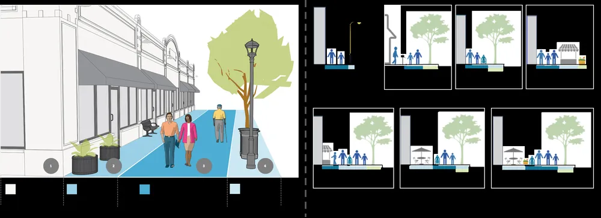
계층적 배치 생성. ① 도로 블록(직선, 교차로, 로터리, 원형, T자)의 종류·개수·순서와 차로 수·폭을 샘플링해 지도를 만든다. ② 블록마다 보도와 횡단보도를 두고, Global Street Design Guide를 따라 보도를 네 기능 구역으로 나눈다. ③ 구역 조건에 맞춰 물체를 놓는다. ④ 지형 생성으로 바닥 상태를 바꾼다.
현실 분포에서 물체 고르기. CityScapes와 Mapillary Vistas에서 자주 나오는 도시 물체 90종을 뽑고, 웹 데이터로 목록을 넓힌다. 그 설명으로 VLM 기반 공개 어휘 검색을 해 3D 에셋 저장소에서 물체를 가져온다.
사람과 로봇. 일상 동작(서기, 걷기, 뛰기)과 특이 동작(춤, 운동)을 나눈다. 경로는 ORCA(S.3.2)와 Push and Rotate(교착을 푸는 다중 에이전트 경로 탐색)로 만든다. 자전거, 스케이트보드, 킥보드 같은 취약 도로 사용자도 넣었다.
travplan에 주는 것. travplan의 동적 장애물은 등속 직선이다. MetaUrban처럼 ORCA로 서로와 정적 장애물을 피하게만 해도 보행자가 벽을 뚫고 지나가는 비현실적 장면이 사라진다.
URBAN-SIM — 보도 장면을 GPU에서 수천 fps로 굴리는 Isaac Sim 기반 학습 플랫폼(arXiv:2505.00690, CVPR 2025 Highlight, GitHub Apache-2.0, v0.1.0 2025-07). 논문은 이것을 마이크로모빌리티의 자율화 문제로 규정한다. 배달로봇이나 모빌리티 스쿠터처럼 공공 보행 공간을 다니는 가벼운 이동 기계를 말하며, travplan의 대상과 같은 범주다. MetaUrban의 생성 파이프라인을 Isaac Sim 5.x로 옮기고 세 가지를 더했다. 첫째, Wave Function Collapse로 평지·계단·경사·요철 지형을 칸 단위로 만든다. 둘째, ORCA를 JAX로 옮겨 보행자가 학습 중인 로봇에 실시간으로 반응하게 했다. 셋째, 환경마다 다른 장면을 쓰는 비동기 장면 샘플링으로 GPU 한 장에서 환경 256개, RGB-D 센서를 켜고 1,800–2,600 fps를 낸다. 에셋은 15,000개가 넘는다. 벤치마크 URBAN-BENCH는 보행 4과제(평지, 경사, 계단, 요철), 내비 3과제 (빈 길, 정적 장애물, 동적 장애물), km 단위 장거리 과제로 되어 있고, 배달로봇(COCO), Go2, B2-W, G1에서 쟀다.
travplan에 주는 의미. L2 학습 장면의 첫 후보다. 권장 사양은 VRAM 12 GB 이상이다(RTX 4080·4090·L40S에서 시험). 데스크톱 (RTX 5080, 16 GB)은 만족하고 랩탑(RTX 4070 Laptop, 8 GB)은 못 미친다. 그래서 URBAN-SIM 작업은 데스크톱에서 한다. 코드는 Apache-2.0이지만 에셋은 따로 내려받으므로 에셋 라이선스를 먼저 확인해야 한다. WFC 지형 생성은 travplan 시나리오를 절차적으로 늘리는 방법으로도 바로 쓸 수 있다.
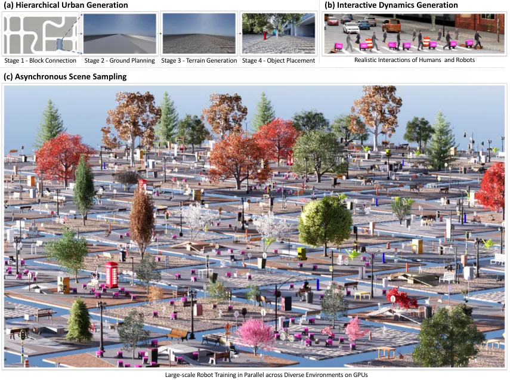
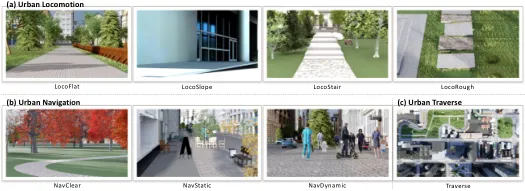
Wave Function Collapse(WFC). 격자의 칸마다 놓일 수 있는 타일(평지, 계단, 경사, 요철) 후보 집합 $T_c$를 두고, 이웃 타일의 허용 조합 $A(t, t', d)$(방향 $d$로 $t$ 옆에 $t'$가 올 수 있는가)를 규칙으로 준다. 아래를 반복한다(WFC의 일반 절차).
타일마다 계단 높이나 경사각 같은 파라미터가 있어 난이도를 조절한다. 결과는 "연속적으로 이어지는" 지형이라, 칸을 독립으로 뽑을 때 생기는 부자연스러운 경계가 없다.
GPU ORCA. 장애물·차도·보행 영역을 담은 2D 점유 지도에서 에이전트마다 시작점과 끝점을 뽑는다. ORCA로 첫 궤적을 만들고, 매 스텝 근접 거리와 상대 속도로 위치를 고친다. 이것을 JAX로 옮겨 CPU와 GPU 사이 복사 없이 모든 환경을 한꺼번에 푼다(Waymax, JaxMARL을 따름).
비동기 장면 샘플링. 에셋을 먼저 캐시에 올리고, 환경마다 캐시에서 서로 다른 배치·장애물·지형을 뽑는다. 관측·보상·행동은 GPU에서 벡터화한다. 환경 수를 1에서 256으로 늘리면 100 fps에서 2,620 fps로 오르고, 256 환경이 46 GB 중 11.2 GB를 쓴다.
travplan에 주는 것. travplan 벤치마크는 시나리오 4개 × seed 3개다. URBAN-SIM처럼 지형 타일과 난이도 파라미터를 WFC로 조합하면 평가 장면을 수백 개로 늘릴 수 있다(TP-0027).
UrbanVerse — 도시 여행 영상을 보고 시뮬 장면을 만드는 real-to-sim 시스템(arXiv:2510.15018, ICLR 2026, GitHub, UrbanVerse-100K). 크기·재질·질량 같은 물리 속성을 단 도시 3D 에셋 10만 개 이상(0.03 m 캔부터 200 m 빌딩까지)을 모았다. 유튜브 도시 여행 영상에서 물체·지면·하늘을 담은 장면 그래프를 뽑고, 비슷한 에셋("디지털 사촌")으로 여러 장면을 Isaac Sim에 만든다. 24개국 영상에서 160개 장면을 만들었다. 이 장면으로 학습한 PPO 정책은 기존 방법보다 시뮬에서 성공률이 6.3%, zero-shot 실물에서 30.1% 높았다(논문 표기). 실물 16개 거리에서 Coco 배달로봇과 Go2로 최대 89.7% 성공했고, 337 m 공공 도로 주행에서 사람 개입은 두 번이었다.
travplan에 주는 의미. 장면 배치가 현실 분포를 따를 때 학습이 일반화된다. UrbanVerse에서는 학습 배치 수를 늘릴수록 성능이 멱법칙으로 올랐지만, 템플릿 기반 절차 생성 배치는 거의 오르지 않았다. travplan의 손으로 만든 시나리오 4개는 이 곡선의 맨 왼쪽에 있다. Planner D의 일반화를 제대로 재려면 현실에서 온 배치가 필요하다.
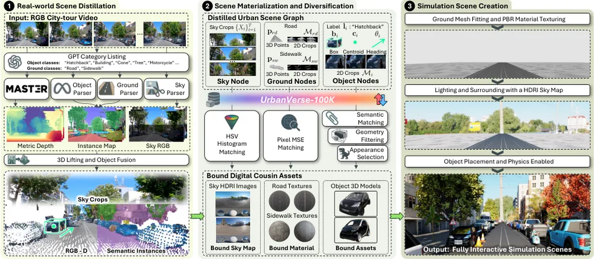
장면 그래프. 영상 하나를 $\mathcal V = \langle \mathcal O, \mathcal G, \mathcal S \rangle$로 요약한다. $\mathcal O$는 물체 노드(범주, 위치, 방향, 외형), $\mathcal G$는 지면 노드(차도·보도의 범위와 외형), $\mathcal S$는 조명과 먼 배경을 담은 하늘 노드다.
추출. 세 프레임마다 GPT-4.1에 보이는 범주를 물어 어휘를 만든다. MASt3R로 깊이, 내부 파라미터, $\mathrm{SE}(3)$ 자세를 추정해 영상을 미터 단위 3D로 올린다. YoloWorld로 공개 어휘 물체를 찾아 3D로 들어 올린다.
디지털 사촌. 그래프의 각 노드에 UrbanVerse-100K에서 비슷한 에셋을 여러 개 묶는다. 같은 배치로 외형이 다른 장면을 여러 개 만들 수 있다. 장면 하나 생성은 18.9분이고(URBAN-SIM 수작업 약 240분), 물체 하나 주석은 2.3초다(수작업 약 600초).
정책. PPO actor–critic이 목표점의 상대 위치와 RGB 영상(135×240)을 받는다. CNN(16, 32, 64채널)과 MLP(128×3)를 쓴다. 보상은 도착, 충돌, 위치 추적, 속도 방향의 합이다.
$$ R = R_A + R_C + R_P + R_V, \qquad R_A = +2000,\ \ R_C = -200 $$
$R_P$는 명령 위치와 실제 위치의 오차에 대한 두 척도 성형 보상(거친 척도 std 5.0·가중치 10, 세밀 척도 std 1.0·가중치 50)이고, $R_V$는 현재 속도와 목표 방향 속도의 코사인 유사도(가중치 10)다. 바퀴형 로봇은 차동 구동 운동학 모델로 굴리고, PD 제어기가 waypoint에서 $(v, \omega)$를 만든다.
travplan에 주는 것. UrbanVerse도 바퀴형 로봇을 관절 물리가 아니라 운동학 모델로 굴렸다. 그래도 실물 zero-shot이 됐다. travplan이 Isaac에서 스워브를 운동학 프록시로 두는 설계(TP-0004)와 같은 판단이다.
Vid2Sim — 손으로 찍은 영상 한 편을 3DGS 시뮬 장면으로 바꾸는 방법(arXiv:2501.06693, CVPR 2025, GitHub). 기하가 일관된 3D Gaussian Splatting으로 장면을 복원하고, 같은 복원에서 TSDF 메시를 뽑는다. Unity 안에서 보이는 것은 3DGS, 부딪히는 것은 보이지 않는 메시로 나눠 쓴다. 웹 영상 9편에서 15초짜리 클립 30개로 환경을 만들고, 날씨와 장애물을 더했다. RGB 입력 내비 정책의 성공률이 기존 시뮬로 학습한 정책보다 디지털 트윈에서 31.2%, 실물에서 68.3% 높았다(논문 표기). 메시만으로 렌더링한 기준선은 실물 과제를 하나도 풀지 못했다.
travplan에 주는 의미. 카메라 정책의 sim-to-real은 렌더링 사실감이 좌우한다는 강한 근거다. travplan Planner는 TravMap(기하)만 쓰므로 지금은 해당하지 않는다. 카메라 기반 TravNet(TP-0022)이나 보행자 검출(TP-0011)을 폐루프로 시험할 때 쓴다.
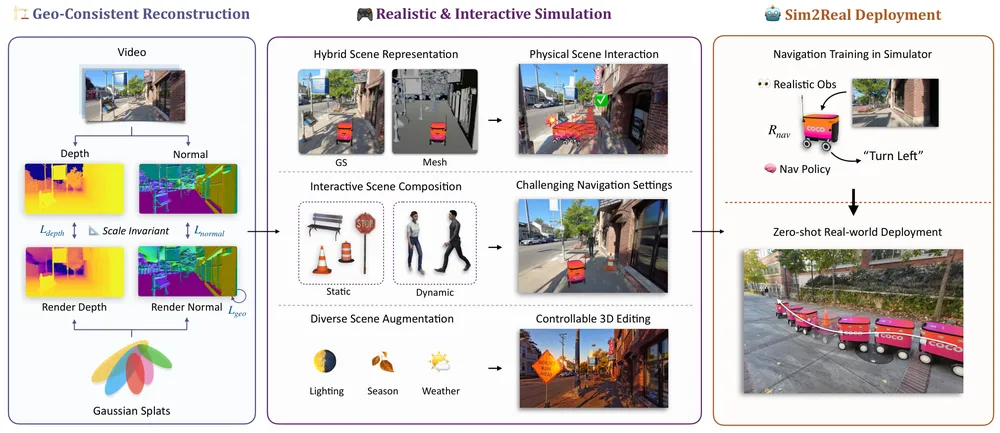
3DGS. 장면을 3D 가우시안 $\mathcal G_i$ 수백만 개로 표현한다. 가우시안마다 평균 $\mu_i$, 공분산 $\Sigma_i$, 불투명도 $o_i$, 색 $c_i$가 있다.
$$ \mathcal G_i(\mathbf x) = \exp\Big(-\tfrac12 (\mathbf x - \mu_i)^\top \Sigma_i^{-1} (\mathbf x - \mu_i)\Big), \qquad \Sigma_i = R_i S_i S_i^\top R_i^\top $$
공분산을 회전 $R_i$와 크기 $S_i$로 나눠 최적화 중에도 양의 준정부호를 지킨다. 렌더링 때는 카메라 변환 $W$와 투영의 야코비안 $J$로 화면의 2D 가우시안 $\Sigma'_i = J W \Sigma_i W^\top J^\top$을 얻고, 앞에서부터 알파 합성한다.
$$ \mathbf c(\mathbf x) = \sum_{i} T_i\, \alpha_i(\mathbf x)\, c_i, \qquad \alpha_i(\mathbf x) = o_i\, \mathcal G'_i(\mathbf x), \qquad T_i = \prod_{j < i} \big(1 - \alpha_j(\mathbf x)\big) $$
혼합 장면. 3DGS만으로는 충돌을 계산할 수 없다. Vid2Sim은 복원에서 TSDF로 메시를 뽑아 Unity 물리에 넣고, 메시의 재질을 투명하게 해 충돌 전용으로 쓴다. 에이전트는 휠베이스 0.8 m, 최대 조향 30°의 자전거 모델이고, 울퉁불퉁한 지면을 흉내 내려 카메라 자세에 잡음을 준다.
travplan에 주는 것. "보이는 것과 부딪히는 것을 나눈다"는 구조는 Isaac Sim NuRec(S.4.2)도 같다. 3DGS 장면에는 반드시 충돌용 프록시 메시가 필요하다.
SidewalkBench — 보도 시각 내비 모델을 같은 조건으로 비교하는 Isaac Sim 벤치마크(arXiv:2606.16953, CoRL 2026, UCLA·Coco Robotics, 코드 공개 예정). Isaac Sim과 Isaac Lab 위에 두 종류 장면을 둔다. 절차 생성 장면은 2 km × 2 km 환경 100개이고 UrbanVerse-100K 에셋을 쓴다. 실제 스캔 장면은 LiDAR와 카메라 4대로 스캔한 거리 11곳(평균 150 m × 150 m)으로, 외형은 3DGS, 기하는 메시다. 보행자는 로봇과의 상대 위치로 발동하는 사건 기반 행동(가로막기, 대화, 줄서기, 정면·측면 접근, 추월, 횡단, 손짓)을 한다. 시나리오는 단위 시험 330개, 보행자 반응 800개, 장거리(100 m 이상) 105개이고 총 36.5 km다. ViNT, NoMaD, CityWalker, FlowPilot 등 9개 모델을 비교했다.
결과는 세 가지다. 첫째, 보도 전용 데이터가 가장 중요했다. 범용 데이터로 학습한 ViNT의 직선 구간 경로 완주율이 0.21·0.33일 때, 보도 데이터 50시간으로 학습한 MIMIC은 0.59·0.39였다. 둘째, 보행자 횡단이 가장 어려웠다(평균 성공 0.01, 보행자 충돌 0.68). 셋째, 가장 좋은 모델도 장거리에서 100 m당 1.34번 실패했다. 또 절차 생성 장면의 성능과 실제 스캔 장면의 성능이 강하게 상관했다.
travplan에 주는 의미. TP-0027(평가 확장)의 틀로 그대로 빌린다. 시나리오를 단위 시험, 보행자 반응, 장거리로 나누고, 장거리는 100 m당 실패(충돌, 보도 이탈, 멈춤)로 잰다. 절차 생성 장면이 실제 장면 성능을 예측한다는 결과는 운동학 시뮬 벤치마크를 계속 쓰는 근거다.
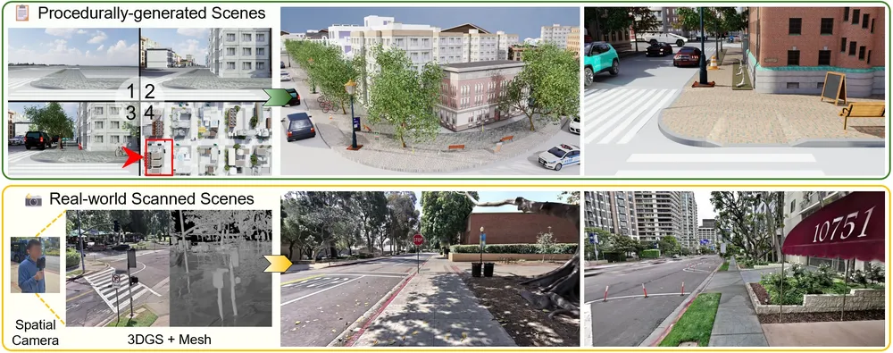
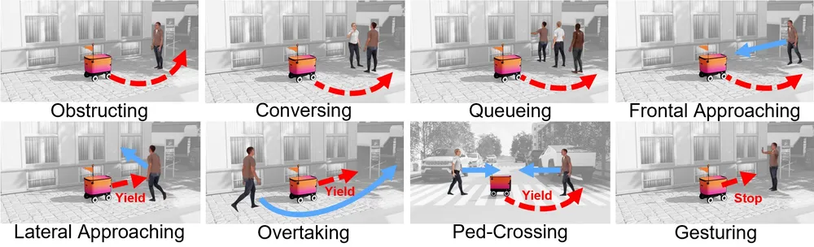
보행자 두 층. 높은 층은 행동 상태 기계다. 보행자와 로봇의 상대 위치가 조건을 만족하면 사건(예: 정면 접근)이 발동한다. 같은 사건이 같은 조건에서 재현되므로 모델끼리 공정하게 비교할 수 있다. 낮은 층은 SMPL 몸체 애니메이션으로, Nvdiffrast 기반 렌더러가 Isaac Sim 기본 사람 애니메이션보다 60배 빠르다.
지표. 단위 시험은 경로 완주율(route completion), 보행자 반응은 성공률, 장거리는 100 m당 실패 횟수와 평균 속도다.
$$ \mathrm{RC} = \frac{\text{목표 경로 중 진행한 길이}}{\text{목표 경로 길이}}, \qquad F_{100} = 100 \cdot \frac{N_{\text{충돌}} + N_{\text{이탈}} + N_{\text{멈춤}}}{L_{\text{주행}}\ [\mathrm m]} $$
부록은 사회적 준수 지표(보행자 충돌률, 보행자까지 최소 거리)를 더한다. 쉬운 추월 시나리오의 평균은 성공 0.38, 충돌률 0.10, 최소 거리 0.90 m이고, 어려운 횡단 시나리오는 0.01, 0.68, 0.59 m였다.
합성 데이터로 미세조정. 가장 약한 두 시나리오(횡단, 손짓)에서 전문가 플래너로 행동을 만들어 FlowPilot을 미세조정하자 행동이 고쳐졌다.
travplan에 주는 것. travplan의 crossing_pedestrians는 정면 접근과 수직 횡단 두 가지를 등속으로 흉내 낸다. SidewalkBench의 여덟 사건 중
최소한 정면 접근, 측면 접근, 추월, 횡단, 가로막기를 L0에 넣고, $F_{100}$과 최소 보행자 거리를 벤치마크 표에 더한다.
CostNav — 배달로봇 내비를 성공률이 아니라 손익으로 채점하는 Isaac Sim 벤치마크(arXiv:2511.20216, 서울대·MAUM.AI·KAIST, GitHub worv-ai/CostNav). Segway E1 배달로봇을 200 m × 200 m 보도망(공사장, 작업 구역, 일반 보도)에서 굴린다. 시뮬 로그를 SEC 공시와 AIS(Abbreviated Injury Scale) 상해 자료 같은 공개 수치로 비용과 수익으로 바꾼다. 비용에는 충돌 순간 속도로 계산한 보행자 상해 비용, 기물 파손, 그리고 jerk 때문에 음식이 상해 생기는 환불까지 들어간다. 기준선 7개(규칙 기반 2, 모방학습 5)가 모두 적자였다. 서비스 수준(SLA)을 한 번이라도 지킨 방법 가운데서는 RGB 카메라와 GPS만 쓰는 CANVAS가 회당 −28.40달러로 가장 덜 손해였다. LiDAR를 쓰는 Nav2(GPS 포함)는 −37.34달러였다. 시뮬에서 학습한 정책을 실물 Segway E1에 올리자 SLA 준수율이 시뮬과 비슷했다.
travplan에 주는 의미. travplan 벤치마크의 RMS jerk와 도달 시간에 돈이라는 공통 단위를 준다. 충돌 순간 상대 속도와 화물 가속도 기록을 벤치마크 로그에 더하면 같은 계산을 할 수 있다. 성공률이 같은 스택(예: guidance+mppi와 planner_d+mppi, 둘 다 12/12)을 가르는 데 특히 쓸모 있다.
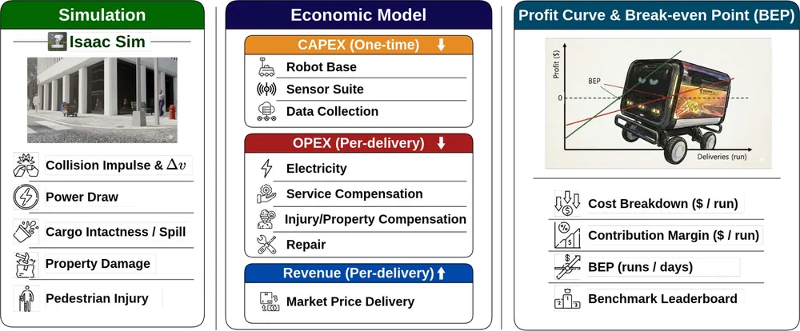
서비스 보상 비용. 늦거나 파손된 배달은 환불한다.
$$ C_{\text{ServiceComp}} = S_{\text{Spoiled}} \times P_{\text{Food}} + \big(S_{\text{Timeout}} + S_{\text{PhysAssist}}\big) \times P_{\text{DeliveryFee}} $$
$S_{\text{Spoiled}}$는 도착했지만 화물이 상한 비율이고, 시뮬의 jerk와 충격에서 계산한다. $S_{\text{Timeout}}$은 시간 초과 비율, $S_{\text{PhysAssist}}$는 사람이 물리적으로 도와준 비율이다.
보행자 상해 비용. 충돌 순간 속도 변화 $\Delta v$로 상해 등급 확률 $P(\mathrm{AIS} \mid \Delta v)$를 구하고, 등급별 경제적 비용을 곱해 더한다. $K$는 기준 차량과 배달로봇의 무게 차이를 보정하는 계수다.
$$ C_{\text{Pedestrian}} = K \sum_{\mathrm{AIS}} P(\mathrm{AIS} \mid \Delta v) \cdot P_{\text{Damage}}(\mathrm{AIS}) $$
손익. 회당 공헌이익은 수익에서 운영비(OPEX: 에너지, 정비, 위 비용들)를 뺀 값이다. 일반적인 손익분기 횟수는 초기 투자(CAPEX)를 회당 공헌이익으로 나눈 값이고, 공헌이익이 음수면 영원히 손익분기에 닿지 못한다.
$$ M_{\text{run}} = R_{\text{run}} - C_{\text{OPEX,run}}, \qquad N_{\text{BEP}} = \frac{C_{\text{CAPEX}}}{M_{\text{run}}}\quad (M_{\text{run}} > 0) $$
기준선에서 가장 큰 운영비는 보행자 안전 비용이었다(NavDP 회당 9.3달러, ViNT 29.89달러, CANVAS 14.38달러).
travplan에 주는 것. travplan 로그에 이미 속도와 jerk가 있다. 충돌 순간 상대 속도와 최소 보행자 거리를 더하면 CostNav식 비용 지표를 스택 비교표에 한 열로 넣을 수 있다.
Jia와 How는 0.10 m 턱을 넘지 않는 제약을 잔디 회피 선호보다 먼저 지키도록, 고정된 생성 정책을 추론 시점에 조종했다(arXiv:2609.15014, 2026-09, MIT, 코드 공개는 확인하지 못했다). 시험장은 ViPlanner가 쓴 주거지 장면(CARLA Town01에서 온 것)을 Isaac Sim에 둔 라스트마일 배달 벤치마크다. 높이 0.10 m 이상의 턱은 넘을 수 없는 칸으로 두고, 잔디 위 주행은 벌점으로만 둔다.
동작 방식. 기반 정책은 RGB-D diffusion 내비 정책 NavDP다(후보 16개, DDPM 10단계). 조종은 두 단계다. 먼저 동적 장벽 안내(dynamic-barrier guidance)가 표본마다 낮은 순위 비용의 기울기를 따르되, 높은 순위 비용이 1차 근사로 늘지 않도록 갱신을 제한한다. 다음으로 후보를 순위대로 거른다. 순서는 실현 가능성, 선호, 진행, 가치 머리다. 로봇은 AgileX Scout 2.0이고, 집 앞에서 집 앞까지 60쌍(9.2–66 m, 중앙값 23.4 m)을 방법마다 세 번 돌렸다. 성공은 조종 없음 44.3/60에서 56.0/60으로 올랐다. 가중합을 가장 잘 맞춘 경우는 51.0/60이었다. 사전식 선택만 쓰면 48.0/60으로 가중합보다 낮았다. 56.0을 만든 것은 동적 장벽 안내다. 0.10 m 턱 위에서 멈춘 실패(traversability failures)는 실행당 12.0개에서 2.0개로 줄었다. 잔디 주행 거리는 9.24 m에서 2.60 m로 줄었다. 도로 칸에 몸 반폭 이내로 다가간 에피소드(curb episodes)는 3.3개에서 0개가 됐지만, 가중합도 0.0이었다. 대가는 긴 주행이다. 에피소드당 주행 거리가 27.2 m에서 36.9 m로 약 36 % 늘었다. 실물 실험은 없다.
travplan에 주는 의미. 두 가지를 가져온다. 하나는 평가 틀이다. "넘을 수 없는 턱"과 "넘을 수 있지만 피하고 싶은 면"을 따로 세는 지표가 TravMap의 치명 셀과 cost의 구분과 같다.
다른 하나는 표본 안내 방식이다. Planner D 선택기(planners/learned/flow_planner.py의 SelectorConfig)는 이미 치명 셀 벌점을 1,000으로 두어 비용 가중치 6, 진행 가중치 4를 압도한다.
그래서 치명 후보를 먼저 버리는 사전식 선택은 사실상 이미 들어 있다. 논문에서도 선택만으로는 이득이 작았다.
남은 차이는 표본을 만드는 단계다. FlowPolicy의 비용 안내 표본(guide_scale, 고정 가중치 guide_w_soft)은 치명 근사와 비용을 고정 가중치로 섞는다. 동적 장벽은 치명 근사가 늘지 않는 방향으로만 비용 기울기를 따른다.
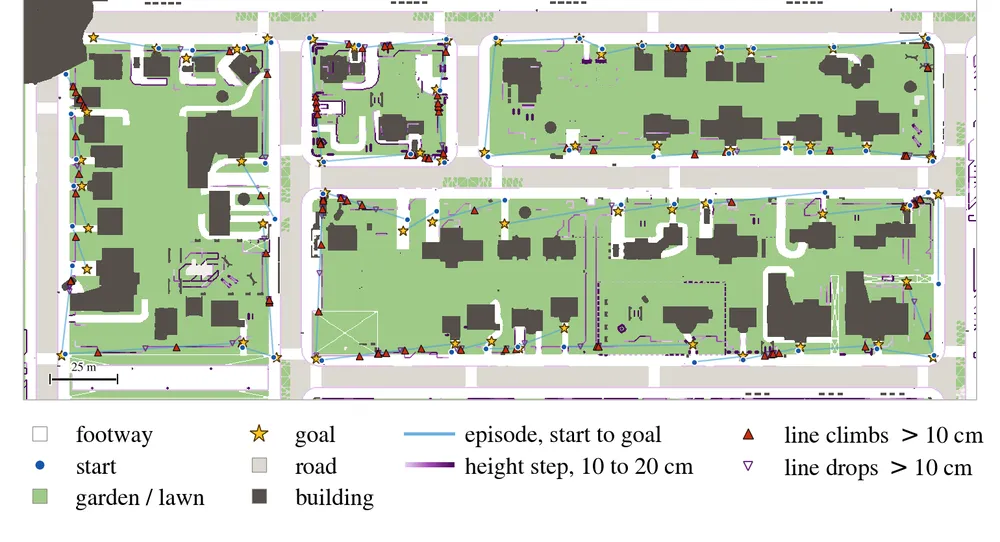
무엇을 하나. 실현 가능성 비용을 $g$, 선호 비용을 $f$라 하자. 생성기의 한 단계에서 표본 $u$를 $f$의 기울기 쪽으로 옮기되, $g$가 1차 근사로 일정량 이상 줄도록 방향 $d$를 고른다. 장벽은 $g$가 클수록 더 큰 감소를 요구하고, 기울기가 작으면 요구를 낮춘다.
$$ \phi(u) = \min\big(\alpha_b\, g(u),\ \beta_b \lVert \nabla g(u) \rVert_2^2\big), \qquad d^\star(u) = \arg\min_d\ \tfrac12 \lVert d - \nabla f(u) \rVert_2^2 \ \ \text{s.t.}\ \ \langle \nabla g(u), d \rangle \ge \phi(u) $$
제약이 하나라 닫힌 해가 있다. 갱신은 $u \leftarrow u - \eta\, d^\star(u)$다. 내비 실험은 $\alpha_b = \beta_b = 1$을 썼다.
$$ d^\star(u) = \nabla f(u) + \lambda(u)\, \nabla g(u), \qquad \lambda(u) = \max\Big(\frac{\phi(u) - \langle \nabla f(u), \nabla g(u) \rangle}{\lVert \nabla g(u) \rVert_2^2},\ 0\Big) $$
사전식 선택. 단계 $j$마다 살아남은 후보 가운데 최솟값에서 허용치 $\varepsilon_j$ 안에 드는 것만 남긴다. 기준이 현재 최솟값이므로 후보가 늘 하나 이상 남는다.
$$ \mathcal I_{j+1} = \{\, i \in \mathcal I_j :\ c_j(y_i) \le c_j^{\min} + \varepsilon_j \,\} $$
내비에서는 실현 가능성($\varepsilon_g = 0.1$, 지평 할인 0.85), 선호($\varepsilon_f = 0.05$), 진행(최대 진행에서 1.5 m 이내), 가치 머리 순이다. 실현 가능성 비용은 LiDAR로 만든 위험 지도에서 온다. 0.10 m 이상의 턱은 고위험이고, 가려진 칸은 음의 장애물이 숨었을 수 있어 "모름" 위험을 준다. 위험은 반지름 0.4 m 발자국 원 안 값 중 나쁜 20 %의 평균(CVaR)으로 모은다.
travplan에 주는 것. Planner D의 후보 선택은 치명 벌점이 커서 사실상 이미 사전식이다. 가져올 것은 위의 장벽 갱신이다. FlowPolicy 안내 표본의 고정 가중 합(guide_scale, guide_w_soft)을 이 닫힌 해로 바꾸면 학습을 다시 하지 않고 시험할 수 있다. 가려진 칸에 "모름" 위험을 주는 처리는 travplan의 그림자 상한과 깊이 prior(TP-0044·0047)와 같은 생각이다. 비교는 2층 짝 비교로 한다.
| 이름 | 엔진 | 장면 | 보행자 | 실물 검증 | 코드·라이선스 | travplan 용도 |
|---|---|---|---|---|---|---|
| MetaUrban | MetaDrive + PyBullet | 절차 생성, 기능 구역 4 | ORCA + P&R, SMPL-X | — | Apache-2.0 | 시나리오 배치 규칙 |
| URBAN-SIM | Isaac Sim 5.x | 절차 생성, WFC 지형 | JAX ORCA(반응형) | 배달로봇·Go2 등 | Apache-2.0(에셋 별도) | L2 학습 장면 1순위 |
| UrbanVerse | Isaac Sim | 영상에서 160장면(24개국) | 있음 | ✅ Coco·Go2, 최대 89.7% | 코드·데이터 공개 | 현실 분포 배치 |
| Vid2Sim | Unity + 3DGS | 영상 30클립 | 추가 가능 | ✅ 배달로봇 | 공개 | 카메라 모듈 검증 |
| SidewalkBench | Isaac Sim + Isaac Lab | 절차 100 + 스캔 11 | 사건 기반 8종 | 스캔 장면 상관 | 공개 예정 | TP-0027 평가 틀 |
| CostNav | Isaac Sim | 200 m × 200 m 보도망 | 밀도 조절 | ✅ Segway E1 SLA | 공개 | 경제성 지표 |
| SimWorld-Robotics | UE5 | 절차 생성 도시 | 있음 + 교통 | — | 공개 | 쓰지 않음 |
| 사전식 조종 벤치마크 | Isaac Sim | ViPlanner 주거지(CARLA Town01), 0.10 m 턱 제약 | 없음 | — (시뮬 60쌍) | 확인 못함 | 치명과 비용을 나눈 지표, 안내 표본 |
S.3 보행자 시뮬레이션
S.3.1 Social Force Model과 HuNavSim
S.3.2 ORCA
S.3.3 사건 기반 시나리오
S.3.4 데이터 기반 보행자
S.3.5 사회적 내비 플랫폼
보행자 모델은 네 단계로 나뉜다. 힘으로 밀고 당기는 규칙 모델(Social Force), 충돌 없는 속도를 최적화하는 모델(ORCA), 로봇과의 상대 위치로
발동하는 사건 스크립트, 실제 궤적에서 배운 생성 모델이다. travplan의 crossing_pedestrians는 로봇에 반응하지 않는 등속 직선이라 이 네 단계
아래에 있다. 반응하지 않는 보행자로는 로봇이 멈춰 버리는 문제(freezing)나 보행자가 로봇을 피해 주는 상호작용을 잴 수 없다.
| 단계 | 대표 | 반응 | 비용 | 쓰는 곳 |
|---|---|---|---|---|
| 규칙: 힘 모델 | Social Force(HuNavSim) | 로봇·서로·벽에 반응 | CPU, 매우 쌈 | HuNavSim, Arena |
| 규칙: 속도 최적화 | ORCA | 충돌 없는 속도 보장 | CPU·GPU(JAX), 쌈 | MetaUrban, URBAN-SIM |
| 사건 스크립트 | 상태 기계 | 조건이 맞으면 정해진 행동 | 쌈, 재현성 최고 | SidewalkBench, DynBench |
| 언어로 만든 행동 트리 | LLM + HuNavSim + SFM | 행동 트리대로, 국소는 SFM | 생성 때 LLM 호출 | GROVE |
| 데이터 기반 생성 | 궤적 diffusion + 동작 모방 | 학습된 분포대로 | GPU, 비쌈 | NavIsaacLab, SONG |
Social Force Model — 목표로 끌리고 사람·벽에서 밀리는 힘의 합(Helbing and Molnár, 1995). 보행자를 질점으로 보고, 원하는 속도로 가려는 힘과 다른 사람·장애물에서 밀려나는 힘을 더해 가속도를 정한다. HuNavSim(arXiv:2305.01303, RA-L, GitHub MIT)은 이 모델에 무리 확장을 더한 ROS 2 보행자 시뮬레이터다. 로봇을 대하는 태도를 여섯 가지(보통, 무관심, 놀람, 호기심, 두려움, 위협)로 고르고, 행동 트리로 조합한다. 시뮬레이터와 독립인 핵심에 Gazebo 래퍼를 붙인다.
travplan에 주는 의미. 2D라서 운동학 시뮬(L0)에 바로 넣을 수 있다. "위협"(로봇 앞을 가로막기)과 "호기심"(로봇에 다가오기)은 보도에서 실제로 일어나는 상황이고, 등속 보행자로는 만들 수 없다.
보행자 $i$의 운동 방정식은 목표 방향 $\mathbf e_i$로 원하는 속력 $v_i^0$에 맞추려는 힘과 반발력의 합이다.
$$ m_i \frac{d\mathbf v_i}{dt} = m_i \frac{v_i^0 \mathbf e_i - \mathbf v_i}{\tau_i} + \sum_{j \ne i} \mathbf f_{ij} + \sum_{W} \mathbf f_{iW} $$
$\tau_i$는 속도를 맞추는 반응 시간이다. 사람 사이 반발력은 흔히 거리에 따라 지수적으로 줄어드는 형태를 쓴다(Helbing 등, 2000).
$$ \mathbf f_{ij} = A_i \exp\Big(\frac{r_{ij} - d_{ij}}{B_i}\Big)\, \mathbf n_{ij} $$
$r_{ij}$는 두 사람 반지름의 합, $d_{ij}$는 중심 거리, $\mathbf n_{ij}$는 $j$에서 $i$로 향하는 단위 벡터다. $A_i$는 세기, $B_i$는 도달 거리다. 벽과의 힘 $\mathbf f_{iW}$도 같은 꼴이다. 로봇을 사람 $j$처럼 넣으면 보행자가 로봇을 피한다. 반대로 로봇에 끌리는 항을 넣으면 "호기심" 행동이 된다.
한계. 힘의 합이라 좁은 통로에서 진동하거나 서로 비켜 가지 못하고 멈추는 일이 생긴다. 충돌이 없다는 보장도 없다.
ORCA — 서로 절반씩 책임지는 충돌 회피 속도(van den Berg 등, ISRR 2011). 에이전트마다 "앞으로 $\tau$초 안에 충돌하지 않는 속도"의 반평면을 이웃마다 하나씩 만든다. 그 반평면들을 모두 만족하면서 원하는 속도에 가장 가까운 속도를 선형계획으로 고른다. 모든 에이전트가 같은 규칙을 따르면 $\tau$초 안의 충돌이 없다는 것이 보장된다. MetaUrban과 URBAN-SIM이 쓴다.
travplan에 주는 의미. 보행자가 서로 뚫고 지나가지 않게 하는 가장 싼 방법이다. 다만 로봇도 ORCA를 따른다고 가정하므로, 로봇을 "피해 주지 않는 장애물"로 두려면 로봇 쪽 책임을 1로 바꿔야 한다.
속도 장애물. 에이전트 $A$, $B$의 위치 $\mathbf p$, 반지름 $r$에 대해, $\tau$초 안에 충돌하게 만드는 상대 속도의 집합이다. $D(\mathbf c, r)$은 중심 $\mathbf c$, 반지름 $r$인 원판이다.
$$ VO^{\tau}_{A|B} = \big\{ \mathbf v \ \big|\ \exists t \in [0, \tau]:\ t\,\mathbf v \in D(\mathbf p_B - \mathbf p_A,\ r_A + r_B) \big\} $$
반평면. 현재 최적 속도의 상대값 $\mathbf v_A^{\text{opt}} - \mathbf v_B^{\text{opt}}$를 $VO$ 경계 밖으로 내보내는 최소 변화 $\mathbf u$와 그 방향의 법선 $\mathbf n$을 구한다. $A$는 그 절반만 책임진다.
$$ ORCA^{\tau}_{A|B} = \Big\{ \mathbf v \ \Big|\ \big(\mathbf v - (\mathbf v_A^{\text{opt}} + \tfrac12 \mathbf u)\big) \cdot \mathbf n \ge 0 \Big\} $$
새 속도. 모든 이웃의 반평면과 최대 속력 원판의 교집합에서, 선호 속도 $\mathbf v_A^{\text{pref}}$에 가장 가까운 점을 고른다(2D 선형계획).
$$ \mathbf v_A^{\text{new}} = \arg\min_{\mathbf v \in D(\mathbf 0, v_A^{\max})\ \cap\ \bigcap_{B \ne A} ORCA^{\tau}_{A|B}} \lVert \mathbf v - \mathbf v_A^{\text{pref}} \rVert $$
travplan에 주는 것. 로봇을 반응하지 않는 에이전트로 두려면 보행자가 $\mathbf u$ 전체를 책임지게 한다($\tfrac12$ 대신 1). 이렇게 하면 보행자가 로봇을 피해 주는 정도를 조절하는 손잡이가 생긴다.
FLUX 논문의 DynBench는 보행자를 ORCA로 움직이지 않는다(arXiv:2603.12806, 2026-03, HKUST·HKUST(GZ)·NUS, 프로젝트, 코드 저장소는 확인하지 못했다). 저자들은 ORCA가 서로 협조한다고 가정하므로 군중이 부자연스럽게 맞춰 움직인다고 본다. 그래서 Isaac Sim에서 상태 기계와 NavMesh 경로 계획과 기하 기반 국소 회피로 보행자를 움직인다.
동작 방식. 보행자마다 세 상태(GoTo, Idle, LookAround)를 오가는 Markov 상태 기계가 있다. 보행자는 세 경유점을 잇는 삼각 경로를 돈다. 경유점 사이의 전역 경로는 NavMesh 위 A*로 만든다. 보행자는 1.1 m/s로 걷고, 로봇 속도는 0.5 m/s로 묶었다. 학습은 비정형 장면 20개(에피소드 2만 개), 평가는 정형 장면 6개(600개)에서 한다. 과제는 정적 셋(PointNav, ImageNav, 탐사)과 동적 셋(동적 PointNav, SocialNav, 동적 탐사)이다. 사회 지표는 Hall의 근접 구역으로 잰다. FLUX(rectified flow 정책, 정적 모방학습 뒤 GRPO 강화학습)는 SocialNav 성공을 NavDP의 59.3에서 64.0으로, 충돌 수를 21에서 16으로 바꿨다. 실물은 Go2-W(바퀴), Go2, G1에 zero-shot으로 올렸다.
travplan에 주는 의미. S.3.2의 ORCA 한계와 같은 지적이다. travplan은 ORCA 반응형 보행자를 선택 항목(--ped-react, TP-0036, PR #232)으로 막 넣었고, 등속 보행자(TP-0154)와의 짝 비교(TP-0167)를 기다린다.
ORCA 보행자는 로봇을 과하게 피해 줄 수 있어, 그 짝 비교에서 충돌이 줄어도 실제보다 낮게 보일 수 있다. 결과를 읽을 때 이 점을 함께 적어야 한다.
DynBench는 반응 대신 "멈춰 서기, 둘러보기"처럼 로봇과 무관한 상태 전환을 넣는다. 서 있다가 갑자기 걷기 시작하는 보행자는 등속 보행자로도 ORCA로도 만들 수 없다.
SidewalkBench(S.2.5)는 보행자와 로봇의 상대 위치로 여덟 가지 사건을 발동한다. 사건 기반 시나리오의 장점은 재현성이다. 같은 사건이 같은 조건에서 일어나므로 스택끼리 공정하게 비교할 수 있다. 단점은 사건 목록 밖의 상호작용을 만들지 못한다는 점이다. travplan의 정면 접근·수직 횡단 보행자도 이 방식의 가장 단순한 형태다.
GROVE는 "응급 상황", "줄서기" 같은 글 설명을 받아 보행자 행동 트리와 경로를 만든다(arXiv:2606.25504, IROS 2026, SMU·NUS 등, 코드 공개는 확인하지 못했다). Arena(S.3.5)를 만든 Linh Kästner가 저자에 있고, HuNavSim 2.0(S.3.1) 위에 지었다.
동작 방식. 계층은 셋이다. 장기 계층은 대형 언어 모델(LLM)이 글에서 관심 구역을 골라 YAML 세계 표현과 맞춘다. 중기 계층은 검색 증강(RAG)으로 행동 노드 명세를 가져와 LLM이 행동 트리를 만들고, Theta*가 2D 점유 격자에서 경유점을 잇는다. 단기 계층은 Social Force로 국소 회피를 하고, 새 노드 FollowVelocityField로 무리 흐름을 만든다. 출력은 Isaac Sim과 Gazebo로 보낸다. 평가는 정성 비교와 GPT-5가 화면을 0–10점으로 매긴 점수뿐이다. 예를 들어 줄서기 6.62점, 기준선 4.39와 4.61점이다. 내비 성능에 주는 영향은 재지 않았다.
travplan에 주는 의미. 지금은 가져오지 않는다. 점수가 VLM 판정이라 시나리오가 "현실에 가까운가"를 수치로 보증하지 못한다. 쓸모는 시나리오 목록을 늘리는 일에 있다. SidewalkBench의 사건 여덟 가지(S.3.3) 밖의 상황을 글로 만들고, 만든 것을 사건 기반 시나리오로 고정해 재현성을 지키는 순서가 맞다.
NavIsaacLab — 궤적 diffusion과 물리 기반 동작 모방으로 만든 군중(arXiv:2606.26265, SUSTech·NUS·Peng Cheng Lab). Isaac Lab 위에서 보행자의 평면 궤적을 diffusion 모델로 만든다. 모델은 자기 과거 궤적, 이웃 궤적, 점유 지도를 조건으로 받는다. 그 궤적을 적대적 동작 모방 제어기가 물리 기반 전신 동작으로 옮긴다. 시뮬로만 학습한 내비 정책을 Scout Mini(RealSense D435i 두 대)에 그대로 올렸다.
SONG(arXiv:2607.25219)은 장면과 사람을 모두 3DGS로 그리고, 대형 언어 모델이 의미에 맞는 보행자 궤적을 만든다. 평가에서 "사회적 예절보다 안전이 먼저 무너진다"와 "모델 크기보다 실제 데이터가 중요하다"를 보고했다.
travplan에 주는 의미. 비싸다. 학습된 보행자는 Planner를 학습시킬 때 가치가 크고, 평가에는 사건 기반이 더 공정하다. travplan은 L0에서 ORCA나 Social Force로 반응형 보행자를 먼저 만들고, 데이터 기반은 L2(Isaac)로 미룬다.
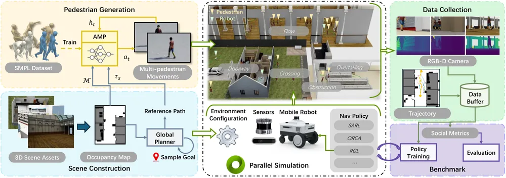
Arena(TU Berlin·NUS, GitHub MIT)는 사회적 내비를 개발하고 비교하는 ROS 2 플랫폼이다. Arena 4.0(arXiv:2409.12471)은 Nav2로 옮기고, 언어 지시와 생성 모델로 3D 장면 그래프 기반 세계를 만든다. Arena 5.0(RSS 2025 데모)은 Isaac Sim을 붙여 사진 같은 장면에서 비교한다. 같은 기능을 Flatland 2D, Gazebo, Unity, Isaac Sim에서 돌린다.
travplan에 주는 의미. Nav2 기준선(규칙 기반 로컬 플래너)과 같은 장면에서 비교하고 싶을 때 쓴다. 지표 정의(최소 거리, 사회적 공간 침범, 경로 방해)를 참고한다.
SocialNav 논문의 SocNav Bench는 Isaac Sim 물리와 3DGS 렌더링을 묶은 사회적 내비 폐루프 벤치마크다(arXiv:2511.21135, 2025-11, Alibaba Amap·Zhejiang Univ., 프로젝트, 발표 학회와 코드 저장소는 확인하지 못했다). 새로 찍은 장면 9곳(공원 3, 거리 3, 사무실 2, 캠퍼스 1, 약 7.3만 m²)을 쓰고, 3DGS를 메시로 바꿔 충돌을 준다.
동작 방식. 로봇은 Go2 하나로 통일했다. 장면마다 20 m와 100 m 시작-목표 쌍을 10개씩 두어, 평가는 9곳 × 20 = 180건이다. 보행자는 걷기 가능 영역 안쪽에 100 m당 6명 이하로 놓인다. 보행자는 길망 위 임의 목표로 평균 1.0 m/s(표준편차 0.2 m/s)로 가고, 로봇과 협조하지 않는다. 지표는 성공률, 경로 완주율, SPL과 거리·시간 기준 사회 준수율이다. SocialNav(Qwen2.5-VL-3B 두뇌 + flow matching 행동 전문가)는 성공률 86.1, CityWalker는 47.8이었다. 실물 Go2에서는 평균 85.0 %(CityWalker 62.5 %)였다.
travplan에 주는 의미. 보도 배달로봇의 평가 장면으로는 SidewalkBench(S.2.5)와 겹친다. 다른 점은 공원과 거리의 실측 3DGS 장면이 이미 있다는 것이다. 보행자가 로봇을 무시한다는 설정은 travplan의 등속 보행자(TP-0154)와 같은 쪽이다. 그래서 이 벤치마크의 사회 지표는 "로봇이 피하는 능력"만 잰다.
S.4 센서와 렌더링
S.4.1 LiDAR 시뮬레이션과 L0의 가림
S.4.2 Gaussian Splatting으로 실제 장소를 시뮬에 넣기
S.4.3 World model을 시뮬레이터로 쓰기
travplan의 인식 경로는 LiDAR 기하이므로 L1에서 가장 중요한 센서는 RTX LiDAR다. 사진 같은 렌더링(3DGS, world model)은 카메라 모듈을 검증할 때 쓴다. 그보다 먼저 고칠 것은 L0의 관측 모델이다. 지금은 5 m 원 안의 모든 칸을 가림 없이 본다.
Isaac Sim RTX LiDAR — GPU 광선 추적으로 만든 LiDAR 점군(문서). RTX 하드웨어에서 렌더링 시점에 LiDAR를 계산한다. Ouster OS, HESAI, SICK 같은 실제 제품 프로파일을 고르고, USD prim에 비가시 재질 (반사율, 방출률)을 붙여 강도를 바꾼다. 회전형은 한 바퀴를 모아 내거나 프레임마다 부분 스캔을 낸다. ROS 2로 PointCloud2와 LaserScan을 보낸다. 병렬 학습에서는 Isaac Lab의 Warp RayCaster가 같은 역할을 더 싸게 한다.
travplan에 주는 의미. P1에서 RTX LiDAR 점군이 elevation_mapping_gpu_ros2로 들어가 TravMap이 된다(TP-0005). L0에는 LiDAR가 없고, 대신
KinematicSim._observe()가 5 m 원 안의 참 높이에 잡음(σ = 0.01 m)만 더해 관측한다. 연석 뒤, 화분 뒤, 경사 너머의 그림자가 없다. 실제
LiDAR로는 이런 칸이 미관측(σ 채널 = 1)으로 남아 Planner의 판단이 달라진다. 2.5D 시선(line of sight) 검사를 L0에 넣는 것이 가장 값싼 충실도
개선이다.
센서가 높이 $h_s$(지면 + 장착 높이)에 있고 칸 $c$까지 수평 거리가 $d_c$일 때, 두 점을 잇는 선분 아래로 지형이 올라오지 않으면 $c$가 보인다. 선분 위의 칸 $k$(수평 거리 $d_k < d_c$)마다 검사한다.
$$ \text{visible}(c) \iff \forall k \in \text{ray}(s, c):\ h_k \le h_s + (h_c - h_s)\,\frac{d_k}{d_c} + \epsilon $$
$\epsilon$은 높이 잡음을 흡수하는 여유다. 광선 $N_\theta$개(예: 수평 0.5° 간격 720개)를 쏘고 광선마다 가장 큰 올려본각 $\max_k \frac{h_k - h_s}{d_k}$를 누적하면, 한 번의 선형 훑기로 모든 칸의 가시성을 구한다(수평선 알고리즘). 수직 시야각 한계는 $\arctan\frac{h_c - h_s}{d_c} \ge \phi_{\min}$으로 더한다.
travplan에 주는 것. 격자 0.05 m, 반경 5 m면 광선당 칸 100개, 광선 720개로 한 스텝에 7만 번 비교다. 직접 재지는 않았지만, numpy로 벡터화하면 시뮬 스텝(0.1 s) 안에 충분히 들어가는 계산량이다.
3DGS real-to-sim은 사진 같은 외형과 충돌 메시를 짝지어 실제 장소를 시뮬 장면으로 만든다. 대표적인 구현은 다음과 같다.
travplan에 주는 의미. 서비스 지역의 실제 보도를 스마트폰이나 스테레오로 찍어 NuRec으로 Isaac Sim에 넣으면, 카메라 기반 TravNet (TP-0022)과 보행자 검출(TP-0011)을 실제 장소의 외형으로 폐루프 시험할 수 있다. 3DGS의 기하는 흐릿하므로 TravMap(기하)을 만드는 데는 쓰지 않고, 프록시 메시와 LiDAR를 그대로 쓴다.
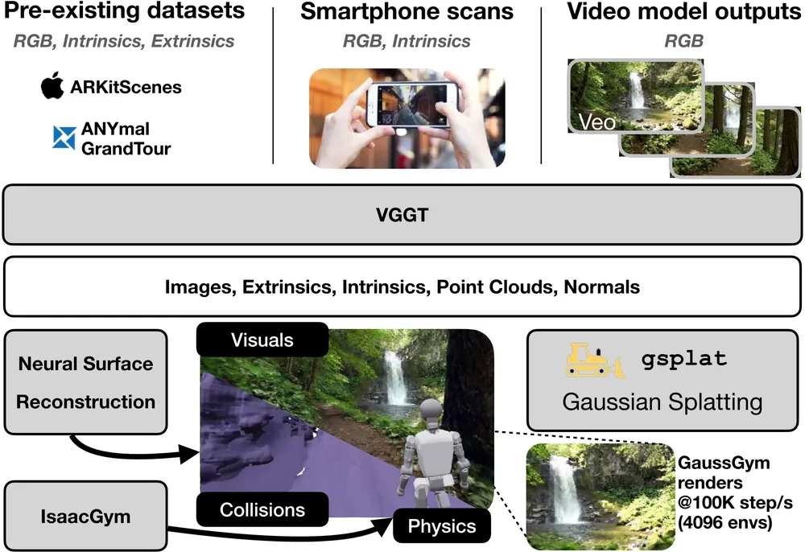
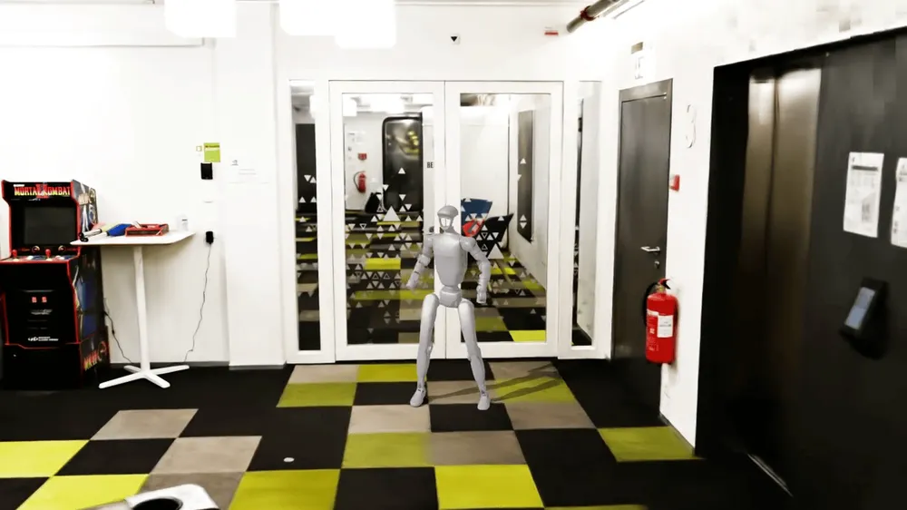
Wanderland는 LiDAR·IMU·RTK-GNSS·어안 카메라를 묶은 손 스캐너로 도시 장면 530곳을 찍고, 기하가 정확한 3DGS 장면을 Isaac Sim USD로 냈다(arXiv:2511.20620, CVPR 2026, NYU·Cornell, 프로젝트). 같은 정책도 기하가 부정확한 장면에서 평가하면 결과가 달라진다는 것을 보였다. 장면은 뉴욕과 저지시티의 실내외(주거, 상업, 거리, 광장, 캠퍼스)로 380만 m²를 넘는다.
동작 방식. 스캐너(MetaCam Air)는 Livox Mid-360 LiDAR, IMU, RTK-GNSS, 4K 어안 카메라 두 대를 가진다. LiDAR-관성-영상-GNSS 융합 SLAM이 미터 단위 점군과 카메라 자세를 낸다. 이 SLAM은 상용 소프트웨어(MetaCam Studio)라 공개되어 있지 않다. 3DGS는 LiDAR 점군에서 시작해 사진과 깊이 손실로 학습한다. 충돌은 점군을 복셀로 만든 뒤 marching cubes로 메시를 뽑아 준다. 영상만으로 궤적 자세를 추정하면 축척을 맞춘 뒤에도 이동 오차가 약 0.30 m, 회전 오차가 5.0°였다. 새 시점 합성 PSNR은 외삽 시점에서 17.92였다. Vid2Sim(S.2.4)은 16.49, GaussGym(S.4.2)은 12.63이었다. Vid2Sim 장면에서 RL로 미세조정한 정책은 CityWalker의 성공률이 21 % 떨어졌다. NoMaD와 MBRA는 변화가 없었다. Wanderland 장면에서는 NoMaD가 0.24에서 0.26, CityWalker가 0.21에서 0.24로 올랐다. NoMaD, CityWalker, MBRA, NaVid, NaVILA 다섯 모델 가운데 실외 성공률이 0.31을 넘는 것은 없었다. 장면은 정적이라 보행자와 차량이 없다.
travplan에 주는 의미. 서비스 지역을 스캔해 Isaac Sim에 넣는다면(S.7 6번) 스마트폰 영상이 아니라 LiDAR를 같이 써야 한다.
travplan은 카메라보다 기하가 먼저다. TravMap은 높이에서 나온다. 궤적 자세 오차가 쌓이면 여러 번 지나간 곳의 지도가 겹쳐 턱 높이가 번지고, 0.07 m 턱과 0.24 m 턱을 가르기 어려워진다.
Wanderland의 처리 순서(LiDAR SLAM, 점군에서 메시, 메시와 3DGS를 USD로 합침)는 sim/isaac/terrain_export.py가 내는 USD 지형과 같은 자리에 들어간다.
실측 장면의 메시를 sim/terrain.py 형식의 높이장으로 바꾸면 운동학 시뮬(L0)과 Isaac(L1)이 같은 실측 지형을 공유할 수 있다.
비용과 위험도 있다. SLAM이 상용이라 같은 처리를 재현하려면 공개 LiDAR SLAM으로 바꿔야 하고, 보행자는 따로 얹어야 한다.
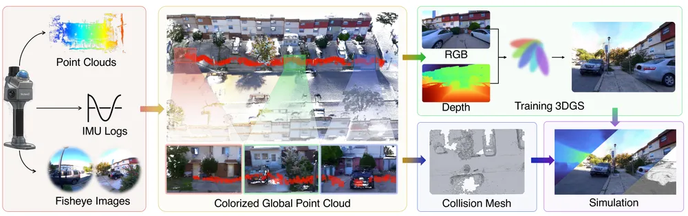
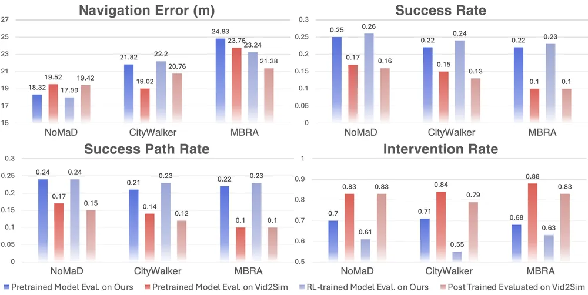
World model은 물리 엔진 대신 학습된 영상 생성기로 "이렇게 움직이면 무엇이 보일까"를 답한다. 대표는 다음과 같다.
travplan에 주는 의미. NWM이 NoMaD 샘플을 순위 매기는 구조는 Planner D의 "샘플 여럿을 선택기로 고른다"와 같다. 차이는 선택기가 TravMap 비용이 아니라 상상한 미래 영상을 본다는 점이다. world model은 계산이 무겁고(1B 파라미터 diffusion) 물리 제약을 보장하지 않으므로, 지금은 연구 참고로만 둔다.
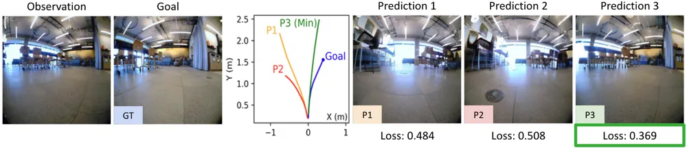
현재 잠재 상태 $s_0$와 목표 $s^*$에 대해, 행동 열 $\mathbf a = (a_0, \dots, a_{T-1})$로 NWM $F_\theta$를 자기회귀로 굴려 $\mathbf s \sim F_\theta(\cdot \mid s_0, \mathbf a)$를 얻는다. 에너지는 마지막 상태와 목표의 지각 유사도 $\mathcal S$(VAE로 영상을 복원한 뒤 LPIPS 등으로 잰다)에 제약 위반 벌점을 더한 값이다.
$$ \mathcal E(s_0, \mathbf a, s_T) = -\mathcal S(s_T, s^*) + \sum_{\tau=0}^{T-1} \mathbb 1(a_\tau \notin \mathcal A_{\text{valid}}) + \sum_{\tau=0}^{T-1} \mathbb 1(s_\tau \notin \mathcal S_{\text{safe}}) $$
$$ \mathbf a^* = \arg\min_{\mathbf a}\ \mathbb E_{\mathbf s}\big[\mathcal E(s_0, \mathbf a, s_T)\big] $$
이 문제를 교차 엔트로피 방법(CEM)으로 푼다. 외부 정책이 있으면 그 샘플 $K$개를 각각 굴려 $\mathcal E$로 순위만 매긴다.
travplan에 주는 것. Planner D의 선택기 점수(지도 비용 + 남은 거리 + 치명 셀 벌점)가 $\mathcal E$의 역할을 한다. 차이는 상태가 영상이냐 TravMap 위의 자세냐다. "제약을 지시 함수 벌점으로 넣는다"는 방식은 Planner D 선택기와 같다.
S.5 지형 생성과 바퀴-지면 상호작용
S.5.1 지형 생성과 난이도 커리큘럼
S.5.2 바퀴 물리의 현실
S.5.3 스워브 모듈 모델
S.5.3b 비동축에는 두 종류가 있다 — AntBot은 뒤쪽이다
S.5.3c 동역학 모델을 배우려면 어떤 plant를 쓰나
S.5.4 변형 지면과 슬립
바퀴형 로봇의 시뮬은 지형 기하는 쉽고 바퀴 접촉은 어렵다. 지형은 절차 생성과 난이도 커리큘럼이 성숙했다. 반면 GPU 물리의 바퀴 접촉은 아직 불안정해서, NVIDIA 자신도 바퀴형 로봇을 운동학으로 굴렸다. travplan은 스워브를 운동학으로 두되, 조향 모듈의 한계를 모델에 넣는 쪽이 맞다.
Isaac Lab TerrainGenerator — 하위 지형을 격자로 깔고 행마다 난이도를 올린다(코드).
높이장 기반 8종(무작위 요철, 피라미드 경사, 피라미드 계단, 이산 장애물, 파도, 징검다리 등)과 메시 기반 13종(계단, 틈, 상자, 구덩이, 레일,
반복 원기둥 등)을 제공한다. curriculum=True면 행마다 difficulty_range 안에서 난이도가 올라간다. 스캔 메시나 USD 지형을 들여오는 것도
된다. 이 구조는 Rudin 등의 게임식 커리큘럼(arXiv:2109.11978)에서 왔다. 로봇이 지형 경계를 넘어가면
다음 리셋 때 더 어려운 행으로 옮기고, 명령 속도가 요구하는 거리의 절반도 못 가면 쉬운 행으로 내린다. 최고 난이도를 푼 로봇은 무작위 난이도로
돌려보내 망각을 막는다.
URBAN-SIM은 WFC로 칸 단위 지형 타일을 이어 붙이고(S.2.2), MetaUrban은 보도 기능 구역으로 물체를 놓는다(S.2.1). travplan sim/terrain.py는
손으로 만든 시나리오 4개(연석·램프, 요철·포트홀, 경사·횡경사, 혼합)를 0.05 m 높이장으로 만들고, sim/isaac/terrain_export.py가 같은 지형을
OBJ, NPZ, USD로 내보낸다.
travplan에 주는 의미. 지금 시나리오는 난이도 손잡이가 없다. 연석 높이, 램프 폭, 포트홀 간격, 경사각을 파라미터로 열고 행마다 올리면, Planner D 학습과 평가에 같은 커리큘럼을 쓸 수 있다. 벤치마크가 12/12로 포화된 지금(TP-0027), 난이도를 올려 실패가 나오는 지점을 찾는 것이 다음 평가 방법이다.
GPU 물리 엔진의 바퀴 접촉은 2025년까지 제대로 된 원기둥조차 없었다. Isaac Lab 토론(#1043)에 따르면 PhysX GPU 파이프라인은 바퀴를 18각형(최대 64각형) 기둥으로 근사했다. 그래서 관절 속도와 차체 속도가 맞지 않고 제자리 회전이 어려웠다. 관리자는 "PhysX 팀이 제대로 된 바퀴 시뮬을 만들고 있다"고 답했고, 2025-02에 원기둥 지원이 들어갔다. 그 사이 연구들은 다음처럼 우회했다.
| 연구 | 바퀴형 로봇을 굴린 방법 |
|---|---|
| COMPASS(NVIDIA) | Isaac Lab의 바퀴 물리 지원이 부족해 속도로 루트 상태를 직접 옮김 |
| UrbanVerse | 차동 구동 운동학 모델 + PD, 바퀴-지면 마찰은 Isaac 강체 물리 |
| Vid2Sim | 자전거 모델(휠베이스 0.8 m, 최대 조향 30°) |
| travplan P1(TP-0004) | SwerveModel body twist로 움직이는 운동학 프록시 |
Wheeled Lab(arXiv:2502.07380, CoRL 2025, GitHub)은 반대로 Isaac Lab에서 서스펜션과 접촉이 있는 다자유도 RC카를 GPU당 64–1,024대 굴렸다. 드리프트, 높이 지형 주행, 시각 내비를 실물에 zero-shot으로 옮겼다. TIAGo Omni 모델(arXiv:2510.10273, CASE 2025)은 메카넘 바퀴 베이스에 두 모델을 뒀다. 실제 바퀴 동역학을 흉내 내는 정밀 모델과, 학습용 속도 기반 경량 모델이다. 실물의 S자 속도 곡선은 적은 주행 기록으로 학습해 맞췄다.
travplan에 주는 의미. 바퀴 접촉을 물리로 푸는 것보다 운동학 모델을 실물 기록으로 보정하는 편이 먼저다. TIAGo의 "정밀 모델 + 보정된
경량 모델" 구조가 travplan에 맞다. 경량 모델(SwerveModel)에 모듈 한계를 넣고, 실물 로봇이 생기면 조향·구동 응답을 기록해 보정한다. 관절
물리는 연석 오르기처럼 접촉이 결과를 좌우하는 경우에만 쓴다.
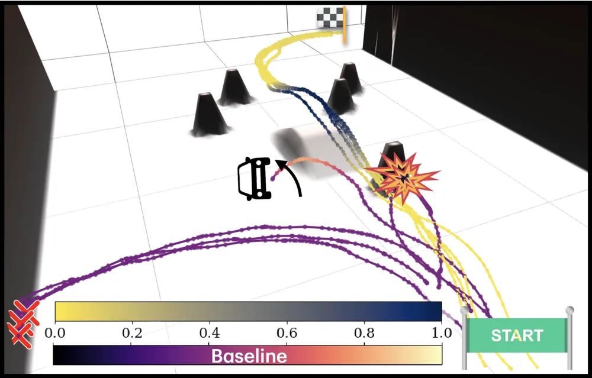
SwerveModel은 body twist의 속도·가속 한계만 알고 조향 모듈을 모른다. 모듈 역기구학(조향각, 바퀴 속도, 비동축 오프셋)은 실물의
ros2_control 제어기(ffw_swerve_drive_controller)에 있다. 그래서 시뮬은 방향을 크게 바꿀 때 모듈이 돌아가는 시간을 무시한다. 옆으로 가다가
앞으로 가는 궤적을 시뮬은 즉시 따르지만, 실물은 모듈이 90° 돌 때까지 차체 속도가 설정값과 다르다. Sorour 등(ICRA 2016)이 다룬 조향형 바퀴
로봇의 특이점 문제도 같은 뿌리다.
travplan에 주는 의미. L0에 모듈 수준 모델을 넣어 조향 속도 한계로 실현되는 body twist를 계산하면, Planner D가 조향 모듈에 무리한 궤적을 내는지 드러난다. Controller(MPPI)의 rollout 모델도 같은 모델로 바꿀지는 결과를 보고 정한다.
모듈 속도. 차체 중심에서 모듈 $i$의 조향축 위치가 $\mathbf r_i = (x_i, y_i)$일 때, body twist $(v_x, v_y, \omega)$가 요구하는 모듈 속도와 조향각은 다음과 같다.
$$ \mathbf v_i = \begin{bmatrix} v_x - \omega\, y_i \\ v_y + \omega\, x_i \end{bmatrix}, \qquad \theta_i^{\text{cmd}} = \operatorname{atan2}(v_{i,y}, v_{i,x}), \qquad s_i = \lVert \mathbf v_i \rVert $$
모듈 뒤집기. 조향각은 $\theta$와 $\theta + \pi$(바퀴 역회전)가 같은 운동을 만든다. 현재 각과의 차이가 $\pi/2$를 넘으면 뒤집어서 조향량을 줄인다.
$$ \big|\operatorname{wrap}(\theta_i^{\text{cmd}} - \theta_i)\big| > \tfrac{\pi}{2} \ \Rightarrow\ \theta_i^{\text{cmd}} \leftarrow \theta_i^{\text{cmd}} + \pi,\quad s_i \leftarrow -s_i $$
조향 속도 한계. 실제 조향각은 한계 $\dot\theta_{\max}$ 안에서만 따라간다. 조향 오차가 크면 구동 속도를 $\cos$로 줄여 엉뚱한 방향으로 미는 것을 막는 것이 흔한 구현이다.
$$ \theta_i \leftarrow \theta_i + \operatorname{clip}\big(\operatorname{wrap}(\theta_i^{\text{cmd}} - \theta_i),\ -\dot\theta_{\max}\Delta t,\ \dot\theta_{\max}\Delta t\big), \qquad s_i^{\text{real}} = s_i \cos\big(\theta_i^{\text{cmd}} - \theta_i\big) $$
실현된 body twist. 모듈 네 개의 실제 속도 $\mathbf v_i^{\text{real}} = s_i^{\text{real}} (\cos\theta_i, \sin\theta_i)$에서 최소제곱으로 되돌린다.
$$ \begin{bmatrix} v_x \\ v_y \\ \omega \end{bmatrix}^{\text{real}} = \arg\min_{\mathbf u} \sum_i \Big\lVert \begin{bmatrix} 1 & 0 & -y_i \\ 0 & 1 & x_i \end{bmatrix} \mathbf u - \mathbf v_i^{\text{real}} \Big\rVert^2 $$
잔차가 크면 모듈끼리 서로 다른 방향으로 미는 것이다(실물에서는 바퀴 끌림과 슬립).
특이점. 순간회전중심(ICR)이 한 모듈의 조향축 위에 오면 그 모듈의 $\mathbf v_i = 0$이라 조향각이 정의되지 않는다. ICR이 그 근처를 지나면 조향각이 급격히 돈다.
비동축 오프셋. 바퀴 접지점이 조향축에서 $e$만큼 떨어져 있으면, 조향만 해도 접지점이 $e\,\dot\theta_i$의 속도로 움직인다. 이 항은 조향 중 차체를 옆으로 끌거나 바퀴를 긁는다. 실물 제어기는 이 항을 보상한다. 같은 항을 외란이 아니라 전방향 운동의 원인으로 보는 정식화가 powered caster vehicle(PCV)다. $e = 0$이면 모듈마다 비홀로노믹 구속이 남아 제자리 조향이 필요해진다(Planner 문서 B.12.4의 TidyBot++).
$$ \mathbf p_i^{\text{contact}} = \mathbf r_i + e \begin{bmatrix} \cos\theta_i \\ \sin\theta_i \end{bmatrix}, \qquad \dot{\mathbf p}_i^{\text{contact}} = \mathbf v_i + e\,\dot\theta_i \begin{bmatrix} -\sin\theta_i \\ \cos\theta_i \end{bmatrix} $$
… 이 토글의 나머지 블록 2개(문단·식·그림)는 대시보드 리서치 탭의 "자세히: 스워브 모듈의 기구학과 한계" 토글에 있다.
"비동축"이라는 한 단어가 서로 다른 두 기구를 가리킨다. 어느 쪽이냐에 따라 로봇이 옆으로 갈 수 있는지가 갈린다.
| 종류 | 오프셋 방향 | 횡방향 구속 | 결과 |
|---|---|---|---|
| (i) 트레일링 캐스터(PCV) | 구름 방향 $e(\theta)$ | $\mathbf v_i \cdot e_\perp = e\,\dot\theta_i$ | 조향 속도가 횡속도를 흡수한다. 정렬 게이트가 필요 없다 |
| (ii) 회전축 방향 오프셋 | 바퀴 축 $e_\perp(\theta)$ | $\mathbf v_i \cdot e_\perp = 0$ | 횡 구속은 동축과 같다. 대신 조향 속도가 바퀴 속도 식에 들어간다 |
$$ \text{(ii)}\quad (\mathbf v + \boldsymbol\omega \times \mathbf c_i)\cdot e(\theta_i) - d_i\,\dot\theta_i = r\,\omega_{\text{wheel},i}, \qquad (\mathbf v + \boldsymbol\omega \times \mathbf c_i)\cdot e_\perp(\theta_i) = 0 $$
AntBot은 (ii)다. 공개 저장소(ROBOTIS-move/antbot, Apache-2.0)의
antbot_description/urdf/wheel.xacro에서 바퀴 조인트 원점이 조향 링크 기준 xyz="0 wheel_offset 0"이고 회전축이 Y다. 즉 접지점이 바퀴
회전축 방향으로 밀려 있다. antbot.xacro의 wheel_offset = (0.512 − 0.401)/2 = 0.0555 m이고, 제어기 설정의
steering_to_wheel_y_offsets: ±0.0555와 일치한다. 그래서 AntBot의 비동축은 "옆으로 더 자유롭다"가 아니라 "조향하면 타이어가
끌린다"는 뜻이다. TidyBot++(Planner 문서 B.12.4)의 powered caster는 (i)이고, 성질이 반대다.
제어기가 그 사실을 드러낸다. antbot_swerve_controller의 역기구학은 오프셋 때문에 조향각이 양변에 나타나서 닫힌 해가 없고
고정점 반복 3회로 푼다(non_coaxial_ik_iterations: 3). 그리고 그 반복은 차체 yaw가 오프셋 레버에 만드는 항만 넣고 $d\,\dot\theta$ 항은
빼므로, 스크럽 보상이 따로 스위치로 있다(enable_steering_scrub_compensator). 시뮬 설정에서는 꺼져 있다.
얼마나 큰가(2026-09-28 실측, 벤치마크 명령 406 스텝). AntBot 기하로 plant를 만들어 명목 SwerveModel과 비교했다.
| 변형 | 평균 |Δω| | 1초 드리프트 평균 | 최대 |
|---|---|---|---|
| 스크럽 보상 꺼짐(시뮬 설정 그대로) | 0.0237 rad/s | 0.0062 m | 0.0158 m |
| 스크럽 보상 켬 | 0.0007 rad/s | 0.0005 m | 0.0075 m |
| 조향 범위 ±56.2° / ±60° / ±90° | — | 셋 다 0.0062 m | 차이 없음 |
세 가지를 읽는다. 첫째, 비동축이 만드는 오차는 주로 yaw에 나타난다 — 좌우 오프셋의 부호가 반대라 스크럽 항이 서로 밀기 때문이다. 둘째, 보상 스위치 하나로 12배 줄어든다. 셋째, 조향 범위 한계는 이 궤적들에서 아예 물지 않는다(MPPI가 전진 위주로 명령한다). 조향 한계가 문제가 되려면 측면 이동이 필요한 장면이 있어야 한다.
서지에 한 가지 불일치가 있다. 조향 범위가 URDF 조인트 한계 ±90°, 제어기 설정 ±60°(1.047 rad), 저장소 README의 모터 사양 ±56.2°로 셋 다 다르다. 바퀴 속도도 제어기 설정 ±50 rad/s와 모터 사양 ±185 rpm(≈19.4 rad/s)이 다르다. 시뮬 튜닝값과 실물 사양을 섞어 쓰지 않도록, 어느 숫자가 5세대 실물인지는 확인이 필요하다.
기구학은 배울 것이 아니라 위 식을 쓰는 것이다(S.5.3b). 배울 것이 있는 곳은 동역학이다. 모듈 4개 × 액추에이터 2개 = 입력 8개로 3자유도 차체를 민다. 남는 5차원은 모듈끼리 서로 밀거나 타이어를 끄는 내부 힘으로 간다. 이 내부 싸움은 기구학으로 유도할 수 없고 물리 엔진이나 실물에서만 나온다.
| 도구 | 바퀴 접촉 | 미분 | 자산 형식 | 이 일에서의 자리 |
|---|---|---|---|---|
| MuJoCo Warp | 마찰 원뿔 접촉, 바퀴에 강함 | ✗ | MJCF (URDF 변환 필요) | plant 1순위 |
| Newton | MuJoCo Warp 백엔드 + 자체 솔버 | 자체 솔버만 ○ | USD·URDF·SDF, omni-wheel 예제 | 기울기로 파라미터를 맞출 때만 |
| Isaac Sim(PhysX) | 바퀴 접촉이 불안정(S.5.2) | ✗ | USD | P1 폐루프 재현(이미 계획) |
| unitree_rl_lab | Go2-W 바퀴 조인트 설정 있음 | — | USD·URDF | 작업 흐름 템플릿 + 바퀴 조인트·액추에이터 모델 관용구 |
| 지도 조건 학습 시뮬(Verti-WM, 아래) | 주행 기록에서 배움, 변형 지면은 지형역학 | ○ | 높이·의미 지도 패치 | P1 이후 실물 plant 식별 참고 |
unitree_rl_lab에서 가져올 것은 세 가지다. 첫째는 순서다. Isaac Lab(Isaac Sim 5.1)에서 정책을 학습하고, MuJoCo에서 sim2sim으로 검증한 뒤, 실물에 올린다. "학습한 것이 엔진에 기대고 있는지"를 다른 엔진으로 교차 검증한다는 절차다. 동역학 잔차를 배울 때 특히 그렇다 — 시뮬에서 배운 잔차는 로봇의 성질이 아니라 그 시뮬의 타이어 모델일 수 있기 때문이다.
둘째는 바퀴 조인트를 Isaac Lab에서 다루는 관용구다. 학습 환경(tasks/locomotion/robots/)은 G1·Go2·H1 셋뿐이지만, 로봇 자산
설정에는 바퀴 달린 4족 Go2-W가 들어 있다(UNITREE_GO2W_CFG). 바퀴 조인트 네 개(.*_foot_joint)에 강성 0, 감쇠 0.5를 주는
것이 전부다 — 위치 게인을 0으로 두어 속도 제어로 만든다. 배포 쪽 설정도 같다(deploy/robots/go2w: kp의 마지막 넷이 0, kd는 3).
스워브 모듈의 구동 바퀴도 같은 처방이고, 조향 조인트만 위치 제어로 남는다.
셋째가 travplan에 가장 크다. unitree_actuators.py의 UnitreeActuator는 Isaac Lab의 DelayedPDActuator를 상속해
토크-속도 곡선(무부하 속도, 전토크 속도, 정·역방향 최대 토크), 정지·동적 마찰, armature를 파라미터로 받는다. 즉 이 계보는
"액추에이터 지연과 마찰"을 시뮬의 1급 모델로 다룬다. 설계 문서에서 잰 바로는 스워브의 잔차를 지배하는 항이 정확히 그것이었다
(기구학 6 mm/s 대 지연 56 mm/s, docs/design-gp-dynamics.md). Isaac Lab에는 이 모델의 학습판인 ActuatorNetMLP도 있고,
그 원조가 ANYmal의 actuator net(ETH RSL, Planner 문서 B.14)이다. 동역학 학습을 한다면 첫 표적은 타이어가 아니라 여기다.
남은 일은 MJCF다. AntBot 저장소에는 MJCF가 없고 URDF만 있다. MuJoCo 컴파일러가 URDF를 읽지만, URDF에 없는 것(접촉 파라미터, Dynamixel 액추에이터 모델, 실제 관성·무게중심)은 손으로 써야 한다. 저장소의 관성값은 자리표시자에 가깝다 — 차체가 $I_{xx} = I_{yy} = 5.0$으로 같고 조향 링크는 0.001 등방이다. 동역학을 배우기 전에 관성부터 실물 값이어야 한다(TP-0035).
Verti-WM은 높이·의미 지도 패치를 조건으로 받아 6자유도 자세를 자기회귀로 예측하는 학습 시뮬레이터다(arXiv:2609.23118, 2026-09, George Mason Univ. Xuesu Xiao 연구실, 발표 학회와 코드는 확인하지 못했다). 강화학습 정책을 이 모델 안에서만 학습해 실물에 올렸다. CPU 다물체 시뮬(Chrono 기반 Verti-Bench, RSS 2025) 대신 GPU에서 도는 학습 모델로 바꾼 것이 핵심이다.
동작 방식. 입력은 12차원 차량 상태, 명령(속도, 조향각), 그리고 예측한 자세에서 떼어 낸 128×128 높이·RGB 의미 패치(약 12.8 m × 12.8 m)다. 지형은 예측하지 않고 지도에서 읽는다. 동역학 전문가 둘을 얼려 두고 섞는다. 단단한 지면은 Transformer가 맡는다. 변형 지면은 NeSAM이 맡는데, 미분 가능한 지형역학과 Newton–Euler 동역학에 학습된 보정을 더한 모델이다. GRU 게이트(학습 파라미터 33,764개)가 둘의 자세 증분을 성분별로 섞는다. 시뮬 데이터는 1,500 궤적(약 10.4시간), 실물 데이터는 Verti-4-Wheeler 120 궤적(약 70분)이다. Verti-WM 안의 PPO는 Verti-Bench 20개 세계에서 19/20을 냈다. Chrono에서 직접 학습한 것은 18/20이었다. 학습 시간은 1.36시간 대 33.48시간이다. 실물로 학습한 Verti-WM에서 키운 정책은 실물 5번 중 4번 성공했다. 시뮬에서 바로 옮긴 정책은 2번이었다. 예측 오차는 단단한 지면에서 오히려 데이터 기반 Transformer보다 7.1 % 컸다(0.3655 m 대 0.3413 m).
travplan에 주는 의미. 지금 travplan에 새로 줄 것은 작다. 지형 조건은 이미 들어 있다. mppi_plant_lag의 rollout 모델(control/mppi/plant_aware.py의 LagSlipSwerveModel)은 rollout 자세마다 belief 지도에서 slope와 rough를 읽어 미끄럼을 넣는다.
NMPC의 잔차 GP도 입력이 명령, 속도, slope, rough의 8차원이다(control/acados_mpc/controller.py의 _features). 레벨 3 경사로(TP-0151)는 사용자 결정으로 plant 로봇의 설계 한계로 정리됐다(MPC 문서 M.3.23).
가져올 것은 두 가지 본보기다. 하나는 해석 모델과 학습 모델을 게이트로 섞어 둘 중 하나로 되돌아갈 수 있게 하는 구조다. 다른 하나는 게이트만 배워서 실물 약 70분으로 맞춘 절차다. P1 이후 실물 plant를 식별할 때 참고한다.
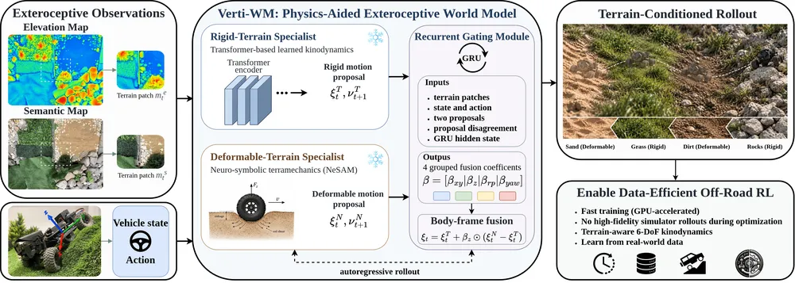
무엇을 하나. 현재 자세 추정 $\hat T_t$에서 두 전문가가 낸 다음 자세 $T^{N}_{t+1}$(NeSAM)과 $T^{T}_{t+1}$(Transformer)을 리 대수의 증분으로 바꾼다.
$$ \xi^j_t = \operatorname{Log}\big(\hat T_t^{-1} T^j_{t+1}\big)^\vee, \qquad d_t = \xi^N_t - \xi^T_t $$
GRU 게이트의 출력 $o_t$를 $\alpha_{t,\ell} = 0.5 + 1.5 \tanh(o_{t,\ell})$로 바꾼다. 네 계수(수평 위치, 높이, roll·pitch, yaw)를 여섯 성분 $\beta_t$로 펼친다.
$$ \xi_t = \xi^T_t + \beta_t \odot d_t, \qquad \hat T_{t+1} = \hat T_t \operatorname{Exp}(\xi_t^\wedge) $$
$\beta = 0$이면 Transformer, $\beta = 1$이면 NeSAM이다. 계수가 $(-1, 2)$에 있어 둘 밖으로 외삽도 한다. 평가는 16스텝(약 1.6 s) 자기회귀 rollout의 마지막 위치 오차다.
travplan에 주는 것. 게이트는 얼린 두 모델 위에서 작은 파라미터만 배우므로, 실물 주행 약 70분 규모의 데이터로도 맞출 수 있었다. travplan에서는 P1 이후 실물 plant를 식별할 때, 해석 모델(LagSlipSwerveModel)과 실물 기록으로 배운 모델을 두 전문가로 두는 형태가 된다. $\beta = 0$으로 해석 모델에 되돌아갈 수 있다는 점이 안전하다.
보도는 대부분 단단하지만 잔디·자갈·눈에서는 바퀴가 빠지고 미끄러진다. 이런 지면을 시뮬하는 방법은 비용 순으로 셋이다. 준경험식 토양 모델 (Chrono SCM)은 거의 실시간이다. 연속체 입자(Chrono CRM의 SPH, Newton의 MPM)는 중간 비용이다. 이산 요소법(Chrono DEM)은 70만 입자 규모에서 다중 코어가 필요할 만큼 비싸다. Chrono SCM은 작은 요철이 없는 변형 지면에서 실시간보다 빠르게 돈다(실시간 계수 1.0 이하). 움직이는 돌이 섞이면 실시간보다 30–40배 느려진다(Serban 등, J. Comput. Nonlinear Dynam. 2023).
travplan에 주는 의미. 변형 지면이 요구 사항이 되기 전에는, L0에서 마찰·슬립을 무작위화하는 것으로 충분하다. 경사에서 바퀴 슬립 때문에 실제 이동이 명령보다 짧아지는 효과만 넣어도 Controller가 그 차이를 메우는지 볼 수 있다.
압력-침하(Bekker-Wong). 접지면의 압력 $\sigma$와 침하 $y$의 관계다. $k_c$는 점착 계수, $k_\phi$는 마찰 강성 계수, $n$은 경화 지수, $b$는 접지면의 짧은 폭이다. Chrono SCM은 $b \approx 2A/L$(면적 $A$, 둘레 $L$)로 임의 모양의 접지면에 일반화한다.
$$ \sigma = \Big(\frac{k_c}{b} + k_\phi\Big)\, y^{n} $$
전단(Janosi-Hanamoto). 바퀴가 미끄러진 거리 $j$만큼 흙이 버티는 전단 응력이다. $c$는 점착력, $\phi$는 내부 마찰각, $K$는 전단 변형 계수다.
$$ \tau = \big(c + \sigma \tan\phi\big)\Big(1 - e^{-j/K}\Big) $$
슬립비. 구동 바퀴의 반지름 $r$, 각속도 $\omega$, 실제 전진 속도 $v$로 정의한다. 슬립이 커질수록 $j$가 커져 견인력이 포화된다.
$$ s = 1 - \frac{v}{r\,\omega} $$
travplan에 주는 것. L0에서 이 식을 다 풀 필요는 없다. 지형 채널(경사, 거칠기)에 따라 슬립비를 무작위로 뽑아 실제 이동을 $v^{\text{real}} = (1 - s)\, v^{\text{cmd}}$로 줄이는 것만으로 Controller의 강건성을 시험할 수 있다.
Sim2Dust는 Isaac Lab 기반 Space Robotics Bench에서 절차 생성 지형과 동역학 무작위화로 경유점 추종 정책을 배워, 현무암 자갈 위 실물 rover로 zero-shot 옮겼다(arXiv:2508.11503, 2025-08, Univ. of Luxembourg SpaceR, GitHub, 발표 학회는 확인하지 못했다). 수백만 입자로 바퀴-자갈 접촉을 푸는 미세조정은 거의 이득이 없었다.
동작 방식. 학습은 단단한 달 표면에서 한다. 지형은 Perlin 잡음으로 큰 기복을, Voronoi 잡음으로 분화구 테두리를 만들고 돌을 Poisson disk로 뿌린다. 병렬 환경마다 다른 지형을 준다. 무작위화는 중력, 차체 기준 오프셋, 관측 지연(최대 40 ms), 행동 지연(최대 120 ms), 자세 잡음이다. 알고리즘은 DreamerV3이고 환경 512개로 2,000만 스텝을 돌렸다. 로봇은 스키드 스티어 Leo Rover이고, 약 20톤의 현무암 자갈을 깐 LunaLab에서 OptiTrack으로 위치를 쟀다. 속도는 5–25 cm/s다. 25 cm/s에서 DreamerV3의 추종 오차는 3.6 cm, 2.3°였다. PPO는 14.8 cm, 8.7°였다. 지형 하나에서 무작위화 없이 학습하면 25 cm/s에서 4.4 cm, 7.1°였다. 무작위화만 더하면 방향 오차가 모든 속도에서 3분의 1 남짓으로 줄었다(5 cm/s 4.2°에서 1.6°, 15 cm/s 6.8°에서 2.3°, 25 cm/s 7.1°에서 2.9°). 입자 미세조정은 약 82시간이 더 들었다. 5 cm/s에서 2.3 cm가 2.2 cm로 조금 나아졌지만 25 cm/s에서는 3.6 cm가 4.3 cm로 나빠졌다.
travplan에 주는 의미. S.5.4의 "변형 지면 전에 슬립·지연 무작위화로 충분하다"는 판단을 실물로 뒷받침한다. 다만 자갈 위를 5–25 cm/s로 가는 스키드 스티어 rover의 결과라, 보도를 가는 스워브 로봇에 옮길 수 있는 범위는 좁다.
여기서의 지연 무작위화는 정책을 지연에 강하게 만드는 일이다. travplan의 mppi_plant_lag(TP-0150)는 지연을 rollout 모델 안에 넣어 예측하는 일이라 성격이 다르다. 둘을 함께 쓸 수는 있다. 예측 모델의 지연 값을 무작위화해 Controller가 지연 추정 오차에 버티는지 볼 수 있다.
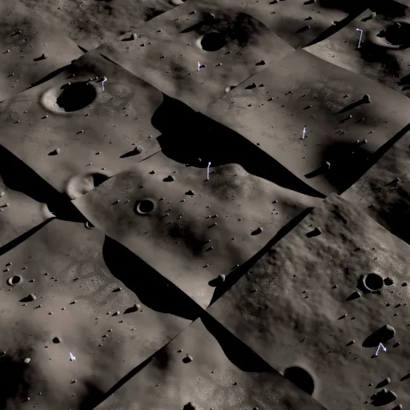
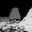
Georgia Tech의 GM-Loco(arXiv:2609.10286, 2026-09)는 Sim2Dust와 반대로 보이는 결과를 냈다. 강체 접촉으로 배운 G1 정책은(무작위화 범위는 본문에 없다) MPM으로 푼 모래와 양귀비씨 위에서 성공률 0 %였다. 3D RFT로 접선력까지 푼 알갱이 접촉 모델로 배운 정책은 같은 조건에서 100 %였다. 학습은 Isaac Lab에서 Warp로 짠 RFT 모델로 하고, 평가는 Newton의 MPM으로 했다(S.1.2). 두 결과의 차이는 속도와 접촉 형태로 읽는다. Sim2Dust는 5–25 cm/s로 구르는 바퀴였고, GM-Loco는 발이 박히는 이족 보행에 1.0–2.5 m/s 명령이었다(MPM 평가, 실물 시험은 0.5–2.5 m/s). 방법과 수치는 Planner 문서 B.16.6의 GM-Loco 카드에 있다.
travplan에 주는 의미. "변형 지면 전에 미끄럼 무작위화로 충분하다"는 판단은 단단한 보도에서만 성립한다. 잔디·흙길이 요구 사항이 되면, 먼저 변형 지면 시뮬레이션 한 판으로 무작위화한 정책이 버티는지 본다.
Chrono::CRM은 Chrono의 SPH(smoothed particle hydrodynamics) 틀 위에 지은 연속체 지형역학 모델이다(arXiv:2507.05643, 2025-07, UW-Madison Negrut 연구실, Journal of Terramechanics 투고, Chrono 패키지 안 BSD-3). 위에서 말한 "연속체 입자(중간 비용)" 갈래의 대표이고, Bekker-Wong 같은 준경험식을 물리 모델로 대신하려 한다.
동작 방식. 흙을 SPH 입자로 풀고, 단단하거나 휘는 바퀴와 도구를 Chrono 다물체 엔진과 짝지어 계산한다. 파기, 고르기, 변형 바퀴, 그라우저(바퀴 돌기)를 다룬다. GPU로 돌고, 로봇 주변만 계산하는 활성 영역 방식으로 길이 10 km, 입자 1억 개 규모의 지형을 대화형에 가까운 속도로 다룬다고 한다. 효율은 준경험식과 견줄 만하다고 적었지만 실시간 계수는 초록에서 확인하지 못했다. 검증은 실물 실험 셋(NASA MGRU3 rover 포함)과 DEM 파기 시뮬과의 비교다.
travplan에 주는 의미. 물리 쪽에서 변형 지면을 풀어야 할 때의 첫 후보다. 보도는 대부분 단단하므로 지금은 쓰지 않는다. 잔디나 자갈이 요구 사항이 되면 Sim2Dust의 결과(입자 미세조정의 이득이 작았다)와 함께 비용을 따져 본다.
S.6 sim-to-real: 격차를 줄이고, 재고, 예측력을 확인한다
S.6.1 도메인 랜덤화
S.6.2 보정: 시뮬을 현실에 맞추기
S.6.3 real-to-sim 장면
S.6.4 예측력: 시뮬 순위가 실물 순위를 맞히는가
S.6.5 시뮬레이터의 허점: travplan L0의 낙관적 가정
sim-to-real은 세 가지 일이다. 시뮬을 넓게 흔들어 현실이 그 안에 들게 하고(도메인 랜덤화), 시뮬을 현실에 맞추고(보정, real-to-sim), 시뮬 결과가 현실 순위를 맞히는지 잰다(예측력). travplan은 앞의 둘보다 셋째를 먼저 설계해야 한다. 예측력을 재지 않으면 벤치마크 12/12가 실물에서 무엇을 뜻하는지 알 수 없다.
도메인 랜덤화는 시뮬 파라미터를 넓게 무작위화해 현실을 "또 하나의 무작위 표본"으로 만든다. Tobin 등(arXiv:1703.06907)은 텍스처와 조명을, Peng 등(arXiv:1710.06537)은 질량·마찰·지연 같은 동역학을 무작위화했다. OpenAI의 자동 도메인 랜덤화(ADR, arXiv:1910.07113)는 정책이 잘할수록 무작위화 범위를 스스로 넓힌다.
travplan에 주는 의미. L0에서 무작위화할 대상은 분명하다. 제어 지연, 센서 지연, 자기 위치 잡음과 드리프트, 슬립, 조향 속도 한계, 높이 잡음이다. Planner D를 이 분포에서 학습하고 평가하면 실물 격차에 대한 1차 대비가 된다.
시뮬 파라미터 $\xi$(마찰, 지연, 질량 등)를 분포 $P_\phi$에서 뽑고, 그 분포 전체에 대한 기대 성능을 최대화한다.
$$ \max_\theta\ \mathbb E_{\xi \sim P_\phi}\Big[ J(\pi_\theta;\ \xi) \Big] $$
현실의 파라미터 $\xi_{\text{real}}$가 $P_\phi$의 지지 집합 안에 있으면, 정책은 현실도 학습한 경우 중 하나로 본다.
ADR. 파라미터마다 범위 $[\phi_L, \phi_H]$를 두고, 가끔 한 파라미터를 경계값에 고정해 성능을 잰다. 경계 성능이 기준 $t_H$보다 높으면 범위를 넓히고, $t_L$보다 낮으면 좁힌다. 정책이 감당할 수 있는 만큼만 어렵게 만드는 커리큘럼이다.
$$ \bar J(\phi_H) > t_H \Rightarrow \phi_H \leftarrow \phi_H + \Delta, \qquad \bar J(\phi_H) < t_L \Rightarrow \phi_H \leftarrow \phi_H - \Delta $$
travplan에 주는 것. 너무 넓은 무작위화는 보수적인 정책을 만든다. Planner D는 이미 12/12이므로, ADR처럼 성능이 유지되는 한도까지 지연·슬립 범위를 넓혀 "어디까지 버티는가"를 벤치마크 지표로 삼을 수 있다.
보정은 실물 기록으로 시뮬 모델의 파라미터나 잔차를 맞추는 일이다. Hwangbo 등(arXiv:1901.08652)은 ANYmal 관절의 위치 오차와 속도 이력에서 토크를 내는 신경망(actuator net)을 실물 데이터로 학습해 시뮬에 넣었다. TIAGo Omni 모델(S.5.2)은 실물 속도 곡선을 적은 기록으로 학습해 경량 모델을 맞췄다. Isaac Lab의 explicit 액추에이터가 이런 모델을 끼우는 자리다(S.1.1).
travplan에 주는 의미. 실물 로봇(TP-0009)이 생기면 첫 주행에서 body twist 명령과 실제 속도를 기록한다. 그 기록으로 SwerveLimits
(속도·가속 한계)와 모듈 조향 속도, 지연을 맞춘다. 이 보정이 끝나야 L0 벤치마크 숫자가 실물 숫자에 가까워진다.
실제 장소를 시뮬 장면으로 만드는 방법은 S.2(UrbanVerse, Vid2Sim)와 S.4.2(NuRec, GaussGym)에 있다. 공통 교훈은 두 가지다. 외형은 3DGS로, 충돌은 메시로 나눈다. 그리고 한 장소의 디지털 트윈보다 현실 분포에서 뽑은 많은 장면이 일반화에 더 중요하다(UrbanVerse의 멱법칙).
Sim-to-Real Correlation Coefficient(SRCC)(Kadian 등, arXiv:1912.06321, RA-L 2020)는 여러 내비 방법의 시뮬 성능과 실물 성능이 얼마나 같이 움직이는지를 잰다. 실험실을 3D 스캔해 Habitat에 넣고 같은 9개 모델을 시뮬과 LoCoBot 실물에서 돌렸다. CVPR 2019 챌린지 설정의 성공률 SRCC는 0.18이었다. 원인은 충돌하면 벽을 따라 미끄러지는 시뮬 동작이었고, 에이전트가 이 허점으로 지름길을 배웠다. 미끄러짐을 끄는 등 몇 가지를 바꾸자 성공률 SRCC가 0.844, SPL SRCC가 0.603에서 0.875로 올랐다.
센서 모델의 격차를 "판정자"로 재는 방법(Mahajan 등, arXiv:2403.11000, UW-Madison)도 있다. 1/6 축척 차량으로 실물 실험 40번을 하고 시뮬 잡음 모델 5개로 재현했다. 날것의 센서 데이터를 직접 비교하면 격차를 잴 수 없었다. 대신 상태 추정기 (robot_localization)를 판정자로 두고, 그 추정 오차의 분포를 시뮬과 실물 사이 Wasserstein 거리로 비교했다.
travplan에 주는 의미. 실물이 생기면 스택 여러 개(guidance+mppi, planner_d+mppi, learned+mppi, +tracker 조합)를 같은 코스에서 시뮬과 실물로 돌려 SRCC를 잰다. SRCC가 낮으면 시뮬의 허점을 찾아 고친다. TravMap도 판정자 방식으로 잴 수 있다. 같은 장소의 시뮬 LiDAR와 실물 LiDAR로 만든 TravMap 비용을 참값과 비교해, 두 오차 분포의 거리를 본다.
SRCC. 방법 $i$의 시뮬 성능 $s_i$와 실물 성능 $r_i$(성공률, SPL 등)의 짝 $n$개에 대한 표본 Pearson 상관이다.
$$ \mathrm{SRCC} = \frac{\sum_i (s_i - \bar s)(r_i - \bar r)}{\sqrt{\sum_i (s_i - \bar s)^2}\ \sqrt{\sum_i (r_i - \bar r)^2}} $$
1에 가까우면 시뮬에서의 비교가 실물에서도 성립한다. 논문은 이것을 시뮬 설계의 목적 함수로도 쓴다. 시뮬 파라미터 $\theta$(작동 잡음, 미끄러짐 등)를 바꿔 가며 $\max_\theta \mathrm{SRCC}\big(S_n(\theta), R_n\big)$를 찾는다. 모델은 고정하고 평가 조건만 바꾼다.
판정자 기반 격차(VEPD). 실험 $k$마다 상태 추정기가 실물 센서로 낸 속도 추정 $\mathbf v_{re}$와 시뮬 센서로 낸 $\mathbf v_{se}$를 각각의 참값과 비교해 RMSE를 구한다.
$$ E_\alpha^{(k)} = \sqrt{\frac{1}{T} \sum_{t=1}^{T} \big(\mathbf v_{\alpha e}[t] - \mathbf v_{\alpha g}[t]\big)^2}, \qquad \alpha \in \{r, s\} $$
실물 오차 집합 $A = \{E_r^{(k)}\}$와 시뮬 오차 집합 $B = \{E_s^{(k)}\}$의 1-Wasserstein 거리 $W_1(A, B)$가 작을수록 시뮬 센서 모델이 "하위 알고리즘 입장에서" 현실과 같다.
travplan에 주는 것. 판정자를 TravMap 파이프라인(elevation_mapping_gpu_ros2 + TravMapBuilder)으로 바꾸면, RTX LiDAR 모델이 travplan에
충분히 현실적인지를 실물 스캔 몇 번으로 판정할 수 있다.
EmbodiedSplat은 iPhone으로 찍은 실내 장소를 3DGS 메시로 Habitat-Sim에 넣고, 그 장면의 시뮬 성공률이 실물을 얼마나 따라가는지 sim-real 상관을 쟀다(arXiv:2509.17430, ICCV 2025, Georgia Tech·TRI, 프로젝트). 재현한 메시의 상관은 0.87–0.97이었다. 상관의 종류(Pearson인지 Spearman인지)와 계산한 장면·정책 수는 확인하지 못했다.
동작 방식. 장면 하나를 iPhone 13 Pro Max의 RGB-D로 20–30분 찍는다. DN-Splatter로 깊이와 법선을 정규화한 3DGS를 학습하고 Poisson 재구성으로 메시를 뽑는다. 그 메시에서 ImageNav 에피소드를 만들어 정책을 미세조정한 뒤 Stretch 로봇에 올렸다. 실물 라운지 한 곳에서 10회씩 잰 결과, HM3D 사전학습 정책이 50 %에서 70 %로 올랐다. HSSD 사전학습 정책은 Polycam 메시로 10 %에서 50 %, DN-Splatter 메시로 40 %가 됐다. 실험은 모두 실내다.
travplan에 주는 의미. 실물이 생기면 할 SRCC 측정(S.6.4, TP-0043)의 짝이 되는 사례다. 차이는 둘이다. EmbodiedSplat은 실내 영상 내비이고, 하나의 장소에서 스택이 아니라 정책 몇 개를 비교했다. travplan은 같은 장소의 실측 장면에서 스택 여러 개의 순위를 맞히는지 재야 한다. Wanderland(S.4.2)가 보였듯 실외 보도에서는 휴대폰 영상만으로 기하가 모자랄 수 있다.
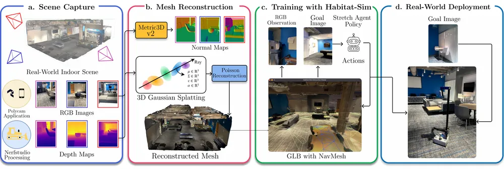
Habitat의 벽 미끄러짐처럼, 시뮬의 허점은 학습 정책이 가장 먼저 찾아낸다. travplan L0(sim/kinematic_sim.py)에는 아래 가정이 있다. 각
가정이 벤치마크를 얼마나 낙관적으로 만드는지는 하나씩 켜 보고 재야 안다.
| L0의 가정 | 실제 | 영향받는 것 | 보강 방법 |
|---|---|---|---|
| 5 m 원 안을 가림 없이 관측 | 연석·물체 뒤는 그림자, 먼 곳은 점이 드묾 | 미관측 영역 판단, σ 채널 | 2.5D 시선 검사(S.4.1) |
| 자기 위치가 정확함 | 드리프트, 점프 | TravMap 정합, 경로 추종 | 위치 잡음·드리프트 무작위화 |
| 지연 0 | 센서·지도·계획·제어 지연 | 동적 장애물, 고속 주행 | 단계별 지연 무작위화 |
| 조향 모듈이 즉시 돎 | 조향 속도 한계, 뒤집기 | 방향 전환이 많은 궤적 | 모듈 모델(S.5.3) |
| 슬립 없음 | 경사·젖은 면 슬립 | 경사 주행, 정지 거리 | 슬립비 무작위화(S.5.4) |
| 보행자가 반응하지 않음 | 로봇을 피하거나 막음 | 멈춤, 사회적 지표 | ORCA·SFM 보행자(S.3) |
| 실패 = 참 지도의 치명 셀 | 접촉 물리, 부딪힘 | 연석 모서리, 좁은 틈 | L1 물리 검증 |
첫 측정: 가림(TP-0031, 2026-09-25). 가림을 켜자 4 시나리오 × 10 seed에서 guidance+mppi가 40/40에서 36/40으로, planner_d+mppi가 39/40에서 38/40으로 내려갔다. 실패는 모두 포트홀 둘레였다. 센서가 0.3 m로 낮으면 포트홀 앞쪽 턱이 바닥을 가려, 음의 장애물이 얕은 오목으로만 보인다. 센서를 0.8 m 이상으로 올리면 bumps_potholes 실패가 10번 중 1번 수준으로 줄었다. L0의 허점 하나가 실제로 벤치마크를 낙관적으로 만들고 있었다는 뜻이다.
S.9 지금 띄울 수 있는 ROS 2 로봇 리그
S.9.1 antbot_gazebo — 대상 로봇 그 자체
S.9.2 CMU 탐사 개발 환경 — 점군과 지형 비용이 바로 나온다
S.9.3 그 밖의 리그
S.9.4 고르는 법
S.1은 엔진을, S.2는 장면을 비교한다. 이 절은 세 번째 축이다. 로봇과 세계와 센서가 이미 묶여 있어 오늘 띄우면 토픽이 나오는 것들이다. travplan이 인식 모듈을 실제 ROS 2 토픽 위에서 개발하려면 엔진 선택이 아니라 리그 선택이 먼저다. 고르는 기준은 다섯 가지다.
TravMapBuilder의 입력이다. 평면 스캔만 내면 높이가 없어 쓸 수 없다.sim/terrain.py의 heightfield를 그 엔진 형식으로 내보낼 수 있어야 한다.다섯 가지를 모두 만족하는 리그는 없다. 무엇을 포기할지가 선택이다.
| 리그 | 엔진 | 로봇·구동 | 지형 | 인식이 받을 토픽 | ROS·OS | 라이선스 | 다섯 기준 |
|---|---|---|---|---|---|---|---|
| antbot_gazebo | Ignition Gazebo + ros2_control | AntBot, 4륜 독립 스워브(조향 ±56.2°) | depot, empty |
/scan_0, /scan_1(2D), /imu/data, /odom, /tf |
Humble · 22.04 | Apache-2.0 | 3D ✗ · 보도 ✗ · 스워브 ✅ · 장비 ✅ · 내보내기 ? |
| CMU 탐사 개발 환경 | 자체 차량 시뮬 | 바퀴 차량, 차동 | 캠퍼스 340×340(기복), 차고 5층(경사), 숲, 터널, 실내 | /registered_scan(5 Hz), /state_estimation(200 Hz), /terrain_map, /terrain_map_ext |
Humble~Lyrical · 22.04~26.04 | BSD(package.xml) | 3D ✅ · 보도 △ · 스워브 ✗ · 장비 ✅ · 내보내기 ✗ |
| dddmr + dfl_mobilerobot_simulator | Gazebo Classic | Go2(사족), Zinger(4WS), Saye(Ackermann) | 램프–플랫폼–기둥(건물급) | Velodyne VLP 점군, /odom, TF |
Humble · 22.04 | BSD-3-Clause | 3D ✅ · 보도 ✗ · 스워브 △ · 장비 ✅ · 내보내기 ✗ |
| 리그 | 엔진 | 로봇·구동 | 지형 | 인식이 받을 토픽 | ROS·OS | 라이선스 | 다섯 기준 |
|---|---|---|---|---|---|---|---|
| Clearpath simulator | Gazebo(gz) | Husky·Jackal·Warthog(스키드), Ridgeback(옴니) | 야외 지형 세계 | 구성에 따라 3D LiDAR·카메라 | Humble·Jazzy | BSD-3-Clause | 3D ✅ · 보도 ✗ · 스워브 ✗ · 장비 ✅ · 내보내기 ✗ |
| TurtleBot4 simulator | Gazebo(gz) | 차동 | 실내 기본 세계 | 2D LiDAR, OAK-D | Humble·Jazzy | Apache-2.0 | 3D △ · 보도 ✗ · 스워브 ✗ · 장비 ✅ · 내보내기 ✗ |
| Isaac Sim + travplan 지형(TP-0005) | Isaac Sim 6.0 | 스워브 운동학 프록시 | sim/terrain.py 그대로 |
RTX LiDAR 점군 | Jazzy · 24.04 | 혼합 | 3D ✅ · 보도 ✅ · 스워브 ✅ · 장비 ✗ · 내보내기 ✅ |
| URBAN-SIM(S.2.2) | Isaac Sim 5.x | 배달로봇·Go2 등 | 절차 생성 보도, WFC 지형 | RGB-D·LiDAR | Isaac 계열 | Apache-2.0(에셋 별도) | 3D ✅ · 보도 ✅ · 스워브 ✗ · 장비 ✗ · 내보내기 △ |
AntBot은 ROBOTIS AI의 4륜 독립 스워브 배달로봇이고, 소프트웨어 스택이 공개돼 있다(ROBOTIS-move/antbot,
Apache-2.0). ROS 2 Humble, Ubuntu 22.04, Jetson Orin이 전제다. antbot_gazebo가 Ignition Gazebo와 ros2_control로 시뮬을 낸다.
antbot_swerve_controller는 비동축 역기구학을 반복 풀이로 처리하고(non_coaxial_ik_iterations), 조향 스크럽 보상기와 해석적 스워브
오도메트리를 가진다.
두 가지가 travplan의 가정을 바로 건드린다. 하나는 조향 범위다. 모듈 조향이 ±56.2°(시뮬 설정은 ±60°)로 묶여 있어 옆으로 설 수 없다.
travplan SwerveModel은 $v_x$, $v_y$, $\omega$를 독립으로 두는 전방향 가정이므로, 대상 로봇이 못 따르는 궤적을 낼 수 있다. 다른 하나는
비동축 오프셋이다. 조향축과 바퀴 접지점 사이 가로 오프셋이 55.5 mm다(TidyBot++의 14 mm보다 네 배 크다, B.12.4).
막는 것은 센서다. 시뮬에 들어 있는 것은 2D LiDAR 두 대(720샘플, ±180°, 20 m, 15 Hz)와 IMU뿐이다. 3D LiDAR도 카메라도 시뮬에는 없다.
평면 스캔에는 높이가 없어 TravMapBuilder에 넣을 수 없다. 다만 lidar_3d_link 프레임이 URDF에 이미 제 위치에 있으므로,
antbot_gazebo/urdf/gazebo_plugins.xacro에 수직 샘플을 가진 gpu_lidar를 더하면 점군이 나온다. 세계도 depot과 empty 둘뿐이라
보도 지형은 따로 만들어야 한다.
바퀴 로봇용 자율 주행·탐사 개발 환경으로, 환경 다섯 개와 지형 분석 모듈이 함께 온다(코드, 사이트, ★1.0k). Ubuntu 22.04 + ROS 2 Humble부터 26.04 + Lyrical까지 시험돼 있다. 환경은 캠퍼스 340×340 m(기복 있는 지형), 다층 차고 140×130 m(5층, 경사), 숲 150×150 m, 터널망 330×250 m, 실내 복도 130×100 m다.
내는 토픽이 travplan에 그대로 맞는다. /registered_scan이 5 Hz로 등록된 점군을, /state_estimation이 200 Hz로 오도메트리를 낸다.
지형 분석 모듈은 /terrain_map(10×10 m)과 /terrain_map_ext(40×40 m)를 5 Hz로 내는데, LiDAR 데이터를 10초 슬라이딩 창으로 들고
로봇 주변 4 m는 감쇠시키지 않는다.
travplan에 주는 의미는 둘이다. 하나는 점군 공급원이다. 지형을 바꿀 수는 없지만 TravMapBuilder와 elevation_mapping_cupy를 실제
ROS 2 토픽 위에서 붙여 보는 데는 충분하다. 다른 하나는 지형 비용 비교 기준선이다. 이 모듈이 매기는 비용은 국소 평탄도(smoothness)
하나다. 경사와 턱을 나누지 않고, 넘어갈 수 있는 0.07 m와 넘어갈 수 없는 0.24 m를 가르지도 않는다. TravMap이 메운다고 주장하는 틈이
바로 거기다(A.1, B.12.2).
tsengapola/dddmr:humble, 압축 2.1 GB).travplan이 지금 답해야 하는 질문이 무엇이냐에 따라 답이 갈린다.
| 질문 | 맞는 리그 | 포기하는 것 |
|---|---|---|
| ROS 2 배관이 도는가(브릿지, TF, 주기) | CMU 탐사 개발 환경 | 지형을 못 바꾼다 |
| 우리 지형에서 2.5D가 이기는가 | Isaac Sim + terrain_export(TP-0005) |
Ubuntu 24.04 + Jazzy 장비가 필요하다 |
| 스워브 기구학이 실물과 맞는가 | antbot_gazebo | 3D 센서를 직접 붙여야 한다 |
| 3D 점군 스택과 비교해 이기는가 | dddmr 내비 스택 + 아무 리그 | 지형이 보도가 아니다 |
PRD는 Gazebo를 주력 엔진으로 쓰지 않기로 했다(docs/prd-p2.md 하지 않는 것, 근거는 보도 시뮬 생태계가 Isaac Sim 위에 있다는 것).
이 절의 리그 가운데 Gazebo 계열을 쓴다면 그 결정의 예외로 둘지 먼저 정해야 한다. 엔진을 바꾸는 것과, Isaac Sim이 없는 장비에서
배관과 비교를 확인하는 것은 다른 일이다.
S.10 최근 연구 비교 (2025–2026)
공통점
차이점
travplan에 주는 의미
2025–2026의 시뮬레이션 연구는 "더 빠른 엔진"에서 "평가를 믿을 수 있는 장면과 모델"로 무게가 옮겨 갔다. GPU 엔진 비교(GPUSimBench)에서는 처리량 1위이고 결정론적인 Genesis가 실물 일치에서는 다섯째였다. 빠르고 재현되는 엔진이 실물에 가깝다는 보장은 없다. 실측 장면 연구(Wanderland, EmbodiedSplat)는 기하가 부정확하면 평가와 미세조정이 흔들린다고 보였다. 바퀴 쪽(Verti-WM, Sim2Dust)은 비싼 접촉 물리 대신 지형 조건 학습 모델과 무작위화로 실물에 옮겼다. travplan이 지금 가져올 것은 엔진 교체가 아니라 Isaac 폐루프로 옮길 때의 재현성 측정이다. 지형 조건 plant와 치명 우선 선택은 travplan에 이미 들어 있다.
| 이름(연·발표) | 주제 | 입력·장면 표현 | 방법의 핵심 | 학습 신호·평가 방식 | 로봇·실험 | 코드 | 절 |
|---|---|---|---|---|---|---|---|
| Isaac Lab (2025-11, arXiv) | 엔진 | USD 장면, GPU 텐서 | PhysX·Newton 백엔드, Warp RayCaster, 타일 렌더링 | 강화·모방학습 프레임워크 | 4족·휴머노이드·팔 | ✅ BSD-3 | S.1.1 |
| GPUSimBench (2026, IROS) | 엔진 비교 | 정육면체 낙하, Franka, 경사 충돌 | 같은 장비에서 처리량·EMD·변동 측정 | 실물 장치 16회와 EMD 비교 | 조작 장면만, 바퀴 없음 | 공개 주장, 주소 확인 못함 | S.1.4 |
| UrbanVerse (2026, ICLR) | 보도 장면 | 도시 영상에서 만든 160장면 | 영상에서 에셋 배치로 real-to-sim | 장면 분포 위 강화학습 | Coco·Go2 실물 | ✅ | S.2.3 |
| SidewalkBench (2026, CoRL) | 보도 평가 | 절차 100 + 스캔 11(3DGS + 메시) | 단위 시험, 보행자 사건, 장거리 세 층 | 100 m당 실패, 스캔 장면 상관 | 배달로봇 | 공개 예정 | S.2.5 |
| 사전식 조종 (2026-09, arXiv) | 배달 벤치마크 | Isaac Sim 주거지(ViPlanner, CARLA Town01), LiDAR 위험 지도 | 동적 장벽 안내 + 사전식 후보 선택 | 학습 없음, 추론 시 조종 | Scout 2.0 시뮬 60쌍 × 3, 실물 없음 | 확인 못함 | S.2.7 |
| DynBench (2026-03, arXiv) | 보행자 | Isaac Sim 장면 26개 | 상태 기계 + NavMesh A* + 기하 회피 | FLUX 정적 모방 + GRPO | Go2-W·Go2·G1 zero-shot | 프로젝트만 | S.3.2 |
| GROVE (2026, IROS) | 보행자 | 글 설명 + YAML 세계 | LLM 행동 트리 + Theta* + SFM | VLM 점수(정성) | 시뮬만 | 확인 못함 | S.3.3 |
| NavIsaacLab (2026-06, arXiv) | 보행자 | Isaac Lab 군중 | 궤적 diffusion + 동작 모방 | 시뮬 학습 내비 정책 | Scout Mini zero-shot | 확인 못함 | S.3.4 |
| SocNav Bench (2025-11, arXiv) | 보행자·장면 | 실측 3DGS 9곳 + 메시, 180건 | 협조 않는 보행자, 사회 준수율 | VLM + flow 정책 평가 | Go2 실물 85.0 % | 프로젝트만 | S.3.5 |
| GaussGym (2025-10, arXiv) | 렌더링 | 3DGS + 충돌 메시, 2,500장면 | Isaac Gym에 3DGS 렌더러 | RGB 정책 + 기하 보조 손실 | A1 계단 zero-shot | ✅ | S.4.2 |
| 이름(연·발표) | 주제 | 입력·장면 표현 | 방법의 핵심 | 학습 신호·평가 방식 | 로봇·실험 | 코드 | 절 |
|---|---|---|---|---|---|---|---|
| Wanderland (2026, CVPR) | 실측 장면 | LiDAR·RTK·어안 스캔 530곳 | LIV-SLAM 기하 위 3DGS, 점군 메시 | 미세조정과 평가 신뢰도 비교 | 다섯 모델 평가, 실외 최고 0.31 | 프로젝트 | S.4.2 |
| Wheeled Lab (2025, CoRL) | 바퀴 물리 | Isaac Lab RC카 | 서스펜션·접촉 다자유도 차량 병렬 | 강화학습 + 무작위화 | RC카 zero-shot | ✅ | S.5.2 |
| Verti-WM (2026-09, arXiv) | 지형·바퀴 | 높이·의미 지도 128×128 패치 | 얼린 두 전문가 + GRU 게이트 | 지도 조건 자기회귀 예측, 그 안에서 PPO | Verti-4-Wheeler 실물 4/5 | 확인 못함 | S.5.3c |
| Sim2Dust (2025-08, arXiv) | 변형 지면 | Isaac Lab 절차 지형(단단한 면) | 지형 다양성 + 지연·잡음 무작위화 | DreamerV3, 입자 미세조정 비교 | Leo Rover 자갈 3.6 cm | ✅ | S.5.4 |
| Chrono::CRM (2025-07, arXiv) | 변형 지면 | SPH 연속체 흙 | GPU SPH + 다물체 바퀴·도구 결합 | 물리 모델, 실물 실험 셋과 DEM 비교 | NASA MGRU3 rover 등 | ✅ BSD-3 | S.5.4 |
| EmbodiedSplat (2025, ICCV) | sim-to-real | iPhone RGB-D, 3DGS 메시 | Habitat-Sim 장면에서 미세조정 | sim-real 상관 0.87–0.97 | Stretch 실물, 실내 | 프로젝트 | S.6.4 |
| 축 | 한쪽 | 다른 쪽 | 얻는 것과 잃는 것 |
|---|---|---|---|
| 동역학 출처 | 물리 엔진(Wheeled Lab, Sim2Dust, Chrono::CRM) | 학습 시뮬(Verti-WM) | 엔진은 처음 보는 지형에도 식이 있다. 학습 시뮬은 Chrono 직접 학습 대비 학습 시간을 약 24배 줄였고(1.36 h 대 33.48 h) 실물 데이터로 맞출 수 있다. 대신 데이터 밖 지형에서 보장이 없다 |
| 장면 출처 | 절차 생성(SidewalkBench 절차 장면, Sim2Dust, DynBench) | 실측 스캔(Wanderland, SocNav Bench, EmbodiedSplat) | 절차 생성은 난이도 손잡이와 무한한 양을 준다. 실측은 현실 분포와 평가 신뢰도를 준다. 실측은 장면 수가 수백 곳에 그친다 |
| 실측 장면의 센서 | 영상만(EmbodiedSplat, Vid2Sim) | LiDAR 융합(Wanderland, SidewalkBench 스캔) | 영상만은 싸고 빠르다. LiDAR 융합은 미터 단위 기하를 준다. Wanderland에서 영상만의 궤적 자세 오차는 축척을 맞춘 뒤에도 0.30 m였다 |
| 보행자 | 사건·상태 기계(SidewalkBench 사건 보행자, DynBench) | 반응·생성(GROVE의 SFM, NavIsaacLab) | 사건은 재현성이 높아 스택 비교에 공정하다. 반응·생성은 다양하지만 같은 조건을 다시 만들기 어렵다. SidewalkBench의 사건 밖 일반 보행자가 ORCA라는 요약이 있으나 본문에서 확인하지 못했다 |
| 제약 처리 | 가중합 벌점(대부분의 강화학습 보상) | 우선순위 분리(사전식 조종) | 가중합은 단순하지만 사례마다 가중치가 맞지 않는다. 사전식 조종은 턱 실패를 줄였지만 주행 거리가 약 36 % 늘었다(27.2 m에서 36.9 m) |
가져올 것.
SelectorConfig.lethal_penalty(1,000)로 이미 들어 있다. 논문에서도 이득은 선택이 아니라 동적 장벽 안내에서 왔다.sim/terrain.py 높이장으로 바꿔 L0와 L1이 같은 실측 지형을 쓰게 한다.가져오지 않을 것.
LagSlipSwerveModel이 이미 rollout 자세마다 slope와 rough로 미끄럼을 넣고, 잔차 GP도 slope와 rough를 입력으로 받는다. Verti-WM은 P1 이후 실물 plant 식별의 참고로만 둔다.시도 순서와 TP 후보.
guide_scale, 고정 guide_w_soft)의 고정 가중치를 동적 장벽으로 바꿔, 치명 근사가 늘지 않는 방향으로만 비용 기울기를 따르게 한다. planner_d+mppi를 1층과 2층에서 기존 안내와 비교한다.S.7 travplan에 주는 의미 — 권고 로드맵
먼저 L0를 현실에 가깝게 만들고, 그다음 L1 폐루프를 돌리고, L2 장면으로 평가를 넓힌다. 비용이 싸고 효과가 큰 순서다. 실물이 생기면 L3 예측력 측정을 설계에 넣는다. 4번(L1 폐루프)을 Isaac Sim이 없는 장비에서 앞당길 수 있는지는 S.9의 리그 비교에서 다룬다.
| 순서 | 할 일 | 층 | 근거 | 비용 | TODO |
|---|---|---|---|---|---|
| 1 | L0 충실도 보강: 2.5D 시선 검사, 지연, 위치 잡음, 슬립, 조향 모듈 모델. 켠 뒤 벤치마크를 다시 돌려 어느 스택이 무너지는지 본다 | L0 | S.4.1, S.5.3, S.5.4, S.6.5 | CPU, 작음 | TP-0031–0034, TP-0035(파라미터) |
| 2 | 반응형 보행자(ORCA·SFM)와 SidewalkBench식 사건 시나리오, 100 m당 실패·최소 보행자 거리·CostNav식 비용 지표 | L0 | S.2.5, S.2.6, S.3 | CPU, 작음 | TP-0036–0038, TP-0027 |
| 3 | 지형 파라미터 커리큘럼(연석 높이, 램프 폭, 포트홀 간격)으로 난이도를 올려 실패 경계 찾기 | L0 | S.5.1 | CPU, 작음 | TP-0039 (완료: 레벨 3까지 세 스택 36–39/40, Planner 문서 B.15.4) |
| 4 | P1 Isaac Sim 폐루프: RTX LiDAR → elevation mapping → TravMap → 스택. 운동학 프록시 유지 | L1 | S.1.1, S.4.1, S.5.2 | GPU, 중간 | TP-0005, TP-0040 |
| 5 | URBAN-SIM(또는 UrbanVerse) 장면을 들여와 학습·평가 장면 다양화. 에셋 라이선스 확인 먼저 | L2 | S.2.2, S.2.3 | GPU 12 GB+, 중간 | TP-0041 |
| 6 | 서비스 지역 스캔을 NuRec으로 Isaac Sim에 넣어 카메라 모듈 폐루프 시험 | L1 | S.4.2 | 스캔 + GPU | TP-0022, TP-0011 이후 |
| 7 | 실물 첫 주행에서 명령·실제 속도 기록으로 SwerveModel 보정, 스택 여러 개로 SRCC 측정 |
L3 | S.6.2, S.6.4 | 실물 필요 | TP-0043(프로토콜), P5 |
산업 쪽 확인 하나. Coco Robotics가 2026-02-26에 Coco 2를 내면서 밝힌 학습 스택은 Isaac Sim + Isaac Lab + Omniverse + Cosmos world foundation model이다. 실제 거리·보행자·차량·장애물을 흉내 낸 합성 데이터로 도심 주행과 예외 상황을 창고 밖으로 나가기 전에 연습시킨다고 했다. 여기에 함대 운용 데이터(마이애미 침수, 시카고 폭설, 로스앤젤레스 정체)와 사람 개입 피드백 루프를 붙인다. 보도 배달로봇을 실제로 운용하는 회사가 travplan과 같은 엔진(Isaac Sim)을 골랐다는 점은 S.1의 "엔진은 Isaac Sim 유지" 결론을 뒷받침한다.
다만 같이 볼 것이 있다. Coco 공동 저자가 참여한 연구 논문(Planner 문서 B.6d의 MIMIC)은 시뮬레이터를 전혀 쓰지 않는다. 원격조종 로그를 점군으로 올려 이탈 관측을 합성하는 쪽을 택했다. 회사의 발표와 논문이 다른 길을 간다는 것은, 보도 주행에서 시뮬이 이기는 자리와 실물 로그 증강이 이기는 자리가 다르다는 뜻으로 읽는 것이 맞다. travplan에는 후자가 더 싸게 먹히는 영역이 있다(B.6d의 토글).
지금 하지 않는 것.
GPU 상태. 2026-09-25 재부팅 뒤 커널 7.0.0-34에서 NVIDIA 드라이버 580.178.04가 정상으로 올라왔다(nvidia-smi 정상, RTX 5080 16 GB).
L1(TP-0005)을 막던 조건이 풀렸다.